Stand in Sponza's shaded arcade and look into the sunlit courtyard. The floor under your feet is not black. Light has arrived there after touching stone, cloth, and other surfaces. A polished object also shows pieces of the atrium that are outside the camera's view. We want to build a renderer that explains both observations, then make it respond while the camera moves.
We will build the explanation in the same order as the system. First decide what a pixel measures. Then construct an estimator that can compute it without a time limit. Finally give that estimator a frame budget, identify the work that can be shared, and design the geometry, caches, probes, and reconstruction needed to share it. At each step, a diagram introduces the idea, an equation makes the contract precise, and an experiment checks a consequence.
The design narrative is a reconstruction from the inspected Unreal Engine 5.8.1 implementation, not a claim to reproduce Epic's historical design meetings. The main implementation is opaque, deferred, Default Lit shading with Lumen. Transmission, volumetrics, hair, and Substrate require additional transport and storage contracts; they are identified where they cross this path. The implementation and capture reference retains the detailed room experiment, resource tables, source ranges, and replay arithmetic. It supplements this explanation rather than determining its reading order.
A scene that gives every approximation something to get wrong
Sponza is useful because its geometry separates several questions that a box tends to hide. The courtyard has an open view of the sky; the side aisles do not. Columns and balconies interrupt visibility. Cloth has a different albedo from stone. Deep recesses need indirect transport. A reflective test object can see a column that the camera cannot. The same scene can therefore reveal a missing light path, an incorrect material, a coarse visibility representation, or a history error.

Keep three locations in mind throughout the article: A, directly illuminated courtyard stone; B, shaded stone beside it; and C, a glossy test surface. At A, direct lighting is a large contribution. At B, sky visibility and light that has already scattered become particularly important. At C, the material selects a narrow range of directions, so an error in just one direction can be conspicuous. These are three queries of one light field, not three different definitions of lighting.
Every comparison must hold camera, geometry, materials, lights, resolution, and display transform fixed unless the caption explicitly names a changed variable. A brighter exposure is not better global illumination. A path-traced image is a useful reference, but a finite accumulation still has sampling error. A buffer shown with false colors is an explanation of stored values, not a photograph of light.
Prediction before looking. Disable final gathering while keeping the sun and its shadows. A should retain its directly lit regions. B should become much darker. This control removes diffuse GI and the rough-reflection contribution supplied by probes. The direct highlight and dedicated glossy reflection at C need not disappear: these contributions have different owners in the renderer. We will return to this distinction when assembling SceneColor.
Build the physical model: what travels along a ray?
A ray is a geometric query, not a packet with an arbitrary brightness. Write it as , where is a position and is a unit direction. Intersecting the ray tells us the first surface reached. To calculate an image, we also need a quantity that describes how much light is traveling in a small neighborhood of that position and direction.
Our starting model is stationary, incoherent, unpolarized geometric optics. Objects are large compared with the wavelength of visible light. We ignore interference and diffraction, and treat propagation between surfaces as straight in a homogeneous medium. Reflection and refraction happen at interfaces. A material model represents the subpixel roughness that we do not resolve as explicit triangles. These are modeling assumptions: a path tracer solves this model; tracing more rays does not make diffraction emerge from it.
Radiant energy is measured in joules. Its rate of transfer, , is power in watts. If a surface receives power, dividing by its area gives irradiance, , in watts per square metre. That number alone loses direction. A ceiling light and a wall light could deliver equal irradiance to the floor while producing completely different reflections.

Imagine a small surface patch of area , a small cone of directions, and the power crossing the patch inside that cone. The cone is measured by its solid angle : the area it cuts from a unit sphere. A complete sphere has solid angle ; a hemisphere has . If is the angle between the surface normal and the cone direction, the patch presents projected area . Define radiance by
LaTeX source
d\Phi=L(x,\omega)\,|n_g(x)\cdot\omega|\,dA(x)\,d\sigma(\omega).Radiance therefore has units . It is a density over both position and direction. That is why a radiance cache needs directional information, and why a texture holding irradiance cannot be substituted for a texture holding radiance even if both contain RGB triples.
We write for the geometric normal and later use for the material's shading normal. Directions and point away from the interaction: points toward where incident light came from, and points toward where outgoing light goes. A ray we trace toward a light travels opposite to the physical propagation of the incident light. Keep that distinction visible in diagrams and in code.
Why a distant wall is not intrinsically darker
In empty space, radiance stays constant along an unobstructed ray. A camera moving farther from a uniformly emitting wall sees the same radiance at each resolved point on the wall. What shrinks is the wall's angular size. It fills fewer pixels and illuminates another surface through a smaller cone. Inverse-square attenuation belongs to that change of angular size, not to a decay applied to every traced radiance value.

For a source patch at , viewed from , let and . Its projected area is . Projecting it onto a sphere centred at x and dividing by that sphere's squared radius gives
LaTeX source
d\sigma_x=\frac{|n_g(y)\cdot(-\omega_{xy})|}{r^2}\,dA(y).This is the area-to-solid-angle Jacobian. It will appear once in an area-light estimator. It will also appear when we convert a sampling PDF. Applying it in both places without accounting for the measure is a common way to darken a renderer by an extra factor of distance squared.
A numerical check. A small source patch of area 0.01 m² faces a receiver 2 m away. Its solid angle is approximately 0.0025 sr. Give it radiance 100 W m⁻² sr⁻¹ and let the receiver face it with cosine 0.8. Its contribution to irradiance is approximately W m⁻². Move the source to 4 m without changing its orientation: the contribution becomes approximately 0.05 W m⁻². Radiance on the connecting ray remains 100. The approximation is treating the finite source patch as small enough that distance and both cosines are nearly constant across it.
From spectral energy to a displayed pixel
Real surfaces scatter different wavelengths differently. The most explicit version of every equation below carries a wavelength , and a sensor integrates arriving spectral radiance against its spectral response. A production RGB renderer instead operates in a chosen linear color space with fitted material and lighting parameters. Multiplication in these equations is componentwise when using RGB. It is not multiplication of sRGB-encoded texture bytes.
Unreal also exposes photometric light controls, such as lux for directional-light illuminance. Photometry weights the spectrum by human visual sensitivity; it is not numerically identical to radiometric watts. A conversion needs a spectrum or a stated RGB calibration. The analytic examples here use radiometric units, while engine comparisons retain the engine's linear RGB and recorded light/exposure conventions. A raw RGB texel should not be labelled W m⁻² sr⁻¹ merely because its role in the equation is radiance. Its quantity, calibration, storage scale, and display transform are four separate descriptions.
A pixel also has a spatial filter, a shutter interval, and a lens aperture. In the general case its measurement integrates over all of them. For our static, fixed-exposure, pinhole examples, we sample locations within a pixel and trace the corresponding rays. This leaves antialiasing and visibility in the integral while removing motion blur and depth of field as extra variables. Tone mapping happens after the linear lighting calculation. We will not compare tone-mapped PNG values as if they were physical radiance.
Generate the primary camera ray
Implement the pinhole explicitly. Let C be its position, F its unit forward direction, R its unit right direction, and U its unit up direction, with an orthonormal camera frame. Let the image be W by H pixels and a = W/H. For pixel column i and row j, choose offsets ξₓ, ξᵧ in [0,1). With horizontal field of view φₕ, generate
LaTeX source
s_x=2\frac{i+\xi_x}{W}-1,\qquad s_y=1-2\frac{j+\xi_y}{H},\qquad
d=\operatorname{normalize}\left[F+s_x\tan(\phi_h/2)R+
\frac{s_y}{a}\tan(\phi_h/2)U\right],\qquad r(t)=C+td.The minus sign in sᵧ converts image rows increasing downward into camera height increasing upward. The corresponding vertical field of view is φᵥ = 2 arctan[tan(φₕ/2)/a]. Sampling different offsets within the pixel changes primary visibility near edges. Averaging the resulting radiance estimates implements the pixel's spatial measurement; we will account for its sampling weight below.
Turn one surface interaction into the rendering equation
At point B on the arcade floor, choose one outgoing direction: toward the camera. Now sweep a small incoming cone over the hemisphere above the floor. Each cone brings irradiance. The material decides how much of that irradiance is scattered toward the camera. Summing those contributions is the local light-transport problem.
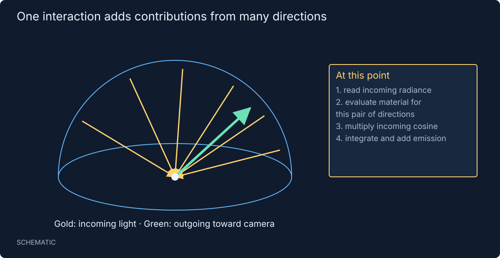
The bidirectional scattering distribution function is outgoing radiance per unit incident irradiance for the specified pair of directions. Its units are inverse steradians. For reflection on an opaque surface it is a BRDF; a BSDF also permits transmission. In the first derivation, geometric and shading normals agree. A differential cone contributes
LaTeX source
dL_o(x,\omega_o)=f_s(x;\omega_i\to\omega_o)\,L_i(x,\omega_i)\,|n_g\cdot\omega_i|\,d\sigma(\omega_i).Integrate over the supported incoming directions and add local emission:
LaTeX source
L_o(x,\omega_o)=L_e(x,\omega_o)+\int_{S^2} f_s(x;\omega_i\to\omega_o)L_i(x,\omega_i)\,d\sigma_x^\perp(\omega_i),\qquad
d\sigma_x^\perp=|n_g(x)\cdot\omega_i|\,d\sigma.The sphere notation follows the general scattering formulation. For an opaque, one-sided surface, the BSDF is zero for unsupported pairs and the integral reduces to a hemisphere. An absolute cosine does not make a material two-sided. The emitted term exists even if no light arrives; the reflected term exists only because light arrives from somewhere else.
That “somewhere else” introduces recursion. Let y be the first intersection of the ray from x along . In vacuum, . To evaluate lighting at x, we need lighting at y. To evaluate lighting at y, we may need another surface, and so on. A ray that misses the scene instead queries an environment emission function.
A material test with an exact answer. A Lambertian material has , where is its diffuse reflectance. Place it in a prescribed constant incident field . Since , its reflected radiance must be . With and , the answer is 1.2. A sampling implementation should converge to this value independently of how it distributes the samples.
Give glossy reflection a physical model
A polished surface does not gather all incident directions equally. It sends a concentrated reflection of the environment toward the camera. A rougher surface spreads that response. We can model the unresolved surface as a collection of tiny mirror facets with varying normals. For a pair of reflection directions, the facet that could connect them has normal .
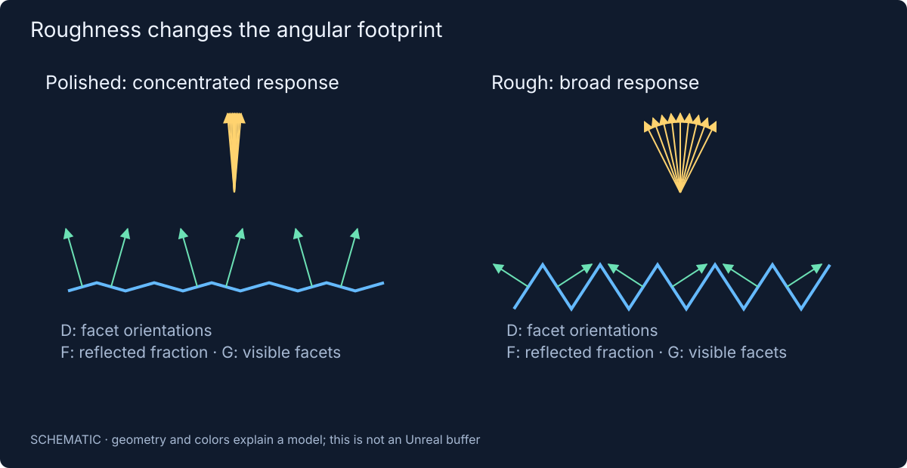
Three factors are needed. describes the distribution of facet normals, normalized by projected area. Fresnel gives the fraction reflected at a facet interface. Masking and shadowing account for facets hidden from the viewer or incident direction. Converting from facet orientation to scattering directions produces
LaTeX source
f_{\rm spec}(\omega_i,\omega_o)=\frac{D(h)F(\omega_i\cdot h)G_2(\omega_i,\omega_o)}{4|n_s\cdot\omega_i|\,|n_s\cdot\omega_o|}.The denominator is part of the BRDF definition, not an instruction to divide an accumulated pixel by two grazing-angle cosines. Evaluate the supported hemisphere, handle limits stably, then multiply by the incoming cosine in the transport integral. In isotropic GGX, with the slope-width parameter,
LaTeX source
D(h)=\frac{\alpha^2}{\pi\left((n_s\cdot h)^2(\alpha^2-1)+1\right)^2},\quad
\Lambda(\omega)=\frac{\sqrt{1+\alpha^2\tan^2\theta_\omega}-1}{2},\quad
G_2=\frac{1}{1+\Lambda(\omega_i)+\Lambda(\omega_o)}.These equations describe an isotropic GGX distribution and height-correlated Smith visibility. Specific Unreal permutations can use approximations, anisotropic forms, or different layer handling. Perceptual roughness commonly maps to ; verify the parameter convention before copying a formula. Confusing r and α changes both the highlight and the PDF.
For a dielectric at normal incidence, . Air to a material with index 1.5 gives 0.04. Fresnel reflectance increases toward grazing angles. The Schlick fit is a useful RGB approximation. Metals require a conductor response; in a metalness workflow, the base color supplies the colored specular reflectance and the diffuse term is suppressed. A physically meaningful metalness blend is not a sum of a fully reflective metal and a fully diffuse surface.
Energy conservation means that integrating the scattered power over all outgoing directions cannot exceed the incident power for a passive surface. Reciprocity constrains the response when source and receiver exchange roles, subject to the proper refractive-index factors for transmission. A single-scattering microfacet model can lose energy at high roughness because some light would bounce between facets. Multiple-scattering compensation is a material-model choice; additional path samples do not repair a missing term in the BSDF.
Implement a glossy continuation sampler with a checkable PDF
Evaluating a BRDF and drawing a direction from it are different operations. Here is a complete, deliberately simple isotropic GGX proposal. Sample a facet normal h from its projected distribution, whose solid-angle density is pₕ(h) = D(h)(n·h). For two independent uniform variates u,v and positive α, invert that distribution:
LaTeX source
\phi_h=2\pi v,\qquad
\cos\theta_h=\sqrt{\frac{1-u}{1+(\alpha^2-1)u}},\qquad
h=(\sin\theta_h\cos\phi_h,\sin\theta_h\sin\phi_h,\cos\theta_h).Transform h from the local normal frame to world space. Reflect the away-pointing outgoing direction about h to obtain the proposed incoming direction. Reflection changes solid angle by a factor of 4|ωₒ·h|, so the direction PDF must change too:
LaTeX source
\omega_i=2(\omega_o\cdot h)h-\omega_o,\qquad
p_\sigma(\omega_i)=\frac{D(h)|n\cdot h|}{4|\omega_o\cdot h|}.If ωₒ·h is nonpositive or the reflected direction lies below the supported geometric hemisphere, return a zero-contribution event. Do not repeatedly redraw until a direction succeeds while retaining the original PDF: conditioning on success changes the distribution. This simple sampler wastes work at grazing angles. Sampling the distribution of visible facet normals improves that behavior, but requires its own corresponding PDF; changing only the sample generator breaks the estimator. The PBR microfacet chapter develops that visible-normal distribution.
For a material with diffuse and glossy lobes, choose the glossy proposal with probability q and cosine sampling with probability 1−q. At the generated direction, evaluate the full non-delta BRDF and the full mixture density, including the proposal that was not selected:
LaTeX source
p_{\rm mix}(\omega_i)=q\,p_{\rm glossy}(\omega_i)+(1-q)\,p_{\rm diffuse}(\omega_i),\qquad
\beta' = \beta\,\frac{[f_{\rm glossy}+f_{\rm diffuse}]|n\cdot\omega_i|}{p_{\rm mix}(\omega_i)}.Keep q positive for every contributing lobe, and use this same mixture PDF when evaluating the competing BSDF strategy for MIS. A metal can set the diffuse contribution and its selection probability to zero. Exact zero roughness should use a delta event with discrete probability; clamping α to a positive minimum instead defines a slightly rough material. Neither convention should be hidden behind a division by zero.
Check before rendering Sponza. With the viewer along the normal, α = 0.5, F₀ = 0.04, and a constant unit incident field, the downloadable numerical example compares the reflected radiance from this sampled estimator against an independent hemisphere integration of the GGX BRDF. It also checks that the projected facet distribution integrates to one. The two tests distinguish an incorrectly normalized D from an incorrect reflection Jacobian. This is a reference proposal for the ideal path tracer, not a claim that Lumen's structured probe refinement uses this sampler.
Derive reflection and refraction within geometric optics
Geometric optics chooses a path with stationary optical length, the integral of refractive index along geometric distance. For a flat boundary, put a source at height hᵢ on one side and a receiver at depth hₜ on the other, with horizontal separation d. If the ray crosses the interface at horizontal coordinate a, its optical length is
LaTeX source
\mathcal S(a)=\eta_i\sqrt{a^2+h_i^2}+\eta_t\sqrt{(d-a)^2+h_t^2}.Set its derivative to zero. Each horizontal displacement divided by segment length is the sine of the angle from the interface normal:
LaTeX source
\frac{d\mathcal S}{da}=\eta_i\frac{a}{\sqrt{a^2+h_i^2}}-
\eta_t\frac{d-a}{\sqrt{(d-a)^2+h_t^2}}=0
\quad\Longrightarrow\quad \eta_i\sin\theta_i=\eta_t\sin\theta_t.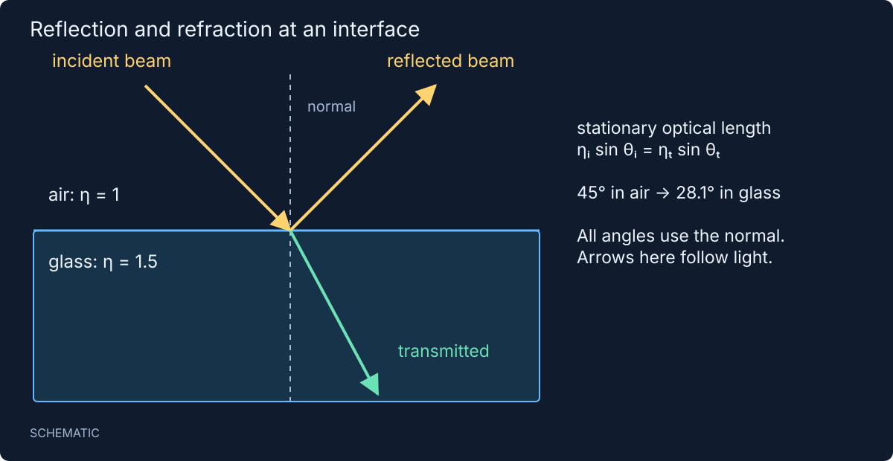
Reflection has equal incident and outgoing angles. With our away-pointing ωᵢ convention, its ideal reflected direction is ωₒ = 2(n·ωᵢ)n − ωᵢ. Refraction is possible only if the computed sin θₜ is at most one; otherwise total internal reflection occurs. A renderer samples the reflected or transmitted event and weights by the event probability as well as the Fresnel response. An ideal direction is a delta constraint, not a finite-valued glossy lobe evaluated at a single direction.
The optical invariant for a ray bundle is étendue, proportional to η²|cos θ|dA dσ. Conservation of power along a lossless bundle therefore conserves L/η² across refractive transport, with the interface's reflected/transmitted power partition handled separately. The earlier statement that radiance is constant along a ray assumes a fixed-index vacuum segment. Radiance transport and importance transport need different adjoint handling at refractive interfaces; the selected BSDF transport mode must own those factors. Our opaque Sponza experiment has no transmitted paths, so its sampler avoids that extra state without changing the opaque derivation.
Normals, texture filtering, and the model the engine actually evaluates
The triangle normal determines geometric sidedness and the area/solid-angle Jacobian. A normal map supplies a different shading frame for the local scattering model. Treating them as interchangeable can create energy and reciprocity errors. A renderer must define how its shading-frame BSDF relates to the geometric measure, and must reject directions that cross an unsupported geometric side. An adjoint, importance-transport implementation needs the corresponding shading-normal correction; a camera-only tutorial must not silently advertise its simplified convention as a bidirectional renderer.
Texture mip selection is also part of the material query. The primary rasterized point has screen-space derivatives; a distant ray hit does not automatically have equivalent derivatives. A card capture evaluates a material from another projection and at another resolution. Even if both paths use the same nominal base-color texture, their filtered material values may differ. Later, when a cache reflection disagrees with hit lighting, we will ask whether the difference came from visibility, directional lighting, or this material-footprint approximation.
Unroll the recursion into paths, then sample them
Follow a possible contribution to B: sun or sky → courtyard stone → arcade floor → camera. The courtyard stone changes both spectrum and direction. The floor changes them again. Visibility decides whether each segment is open. To obtain the pixel, we must add this contribution to all other possible sequences, including shorter and longer ones.
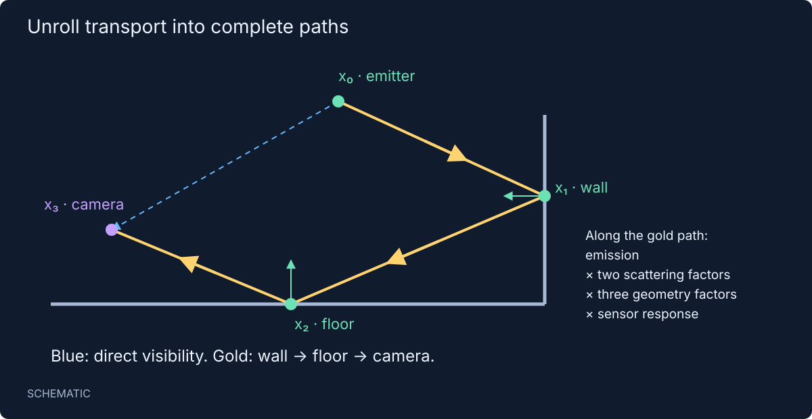
Write a path as , ordered from emitter to sensor , following Veach's notation. A path has k edges and k−1 interior scattering vertices. Converting the direction integral at each vertex to an area integral puts the two cosines and inverse-square factor for an edge into
LaTeX source
G(x\leftrightarrow y)=V(x\leftrightarrow y)\frac{|n_g(x)\cdot\omega_{xy}|\,|n_g(y)\cdot(-\omega_{xy})|}{\|y-x\|^2}.Here V is one when the open segment is unobstructed, zero otherwise. For the surface-only path-space expression, let include scattering, emitting, and sensor surface domains. The sensor response selects measurement j. With arrows following light, the contribution of a path is
LaTeX source
f_j(\bar x)=L_e(x_0\to x_1)\,W_e^{(j)}(x_{k-1}\to x_k)
\left[\prod_{i=1}^{k-1}f_s(x_{i-1}\to x_i\to x_{i+1})\right]
\left[\prod_{i=0}^{k-1}G(x_i\leftrightarrow x_{i+1})\right].For each length, integrate over the possible vertices using the area-product measure , then sum over lengths:
LaTeX source
I_j=\sum_{k=1}^{\infty}\int_{\Omega_k}f_j(\bar x)\,d\mu_k(\bar x).This is the rendering equation with its recursion written out. It does not require a renderer to construct giant arrays containing every path. It gives us an accounting system: every algorithm must specify which paths it estimates, how it samples them, and which factors it approximates. Point lights, ideal directional lights, ideal mirrors, and pinhole cameras contain delta distributions; their constrained endpoints or directions need discrete/delta sampling rules rather than being treated as ordinary densities per unit area. An environment emitter is represented at infinity with a directional measure rather than an ordinary finite-area endpoint. The practical camera tracer below conditions on its generated camera ray and handles each light through its declared sampling measure.
Why random sampling gives the right average
Consider any integral . Choose z with density p relative to the same measure ν. The random value has expectation , provided p is positive wherever g contributes. The probability in the numerator of that expectation cancels the sampling density in the estimator. Averaging N such values reduces variance; it does not change the expected answer.
LaTeX source
\widehat I_N=\frac1N\sum_{s=1}^{N}\frac{g(z_s)}{p(z_s)},\qquad
\operatorname{Var}(\widehat I_N)=\frac{\operatorname{Var}(g/p)}{N}The variance expression assumes independent identically distributed samples. Stratification and low-discrepancy sampling change the error behavior, but not the requirement to account for the sampling measure. The familiar square-root convergence means that four times as many independent samples give about half the standard deviation. This is already a warning about trying to buy real-time stability using more independent paths alone.
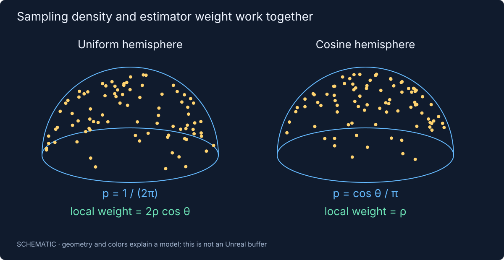
For an opaque diffuse bounce, uniform hemisphere sampling has , so its local weight is . Cosine sampling has , giving the constant weight ρ. Generate the latter from two uniform variates :
LaTeX source
r=\sqrt u,\quad\phi=2\pi v,\quad
\omega_{\rm local}=(r\cos\phi,r\sin\phi,\sqrt{1-u}).Rotate that local direction into an orthonormal frame around the surface normal. For the constant-field test in the previous chapter, cosine sampling returns exactly ρL₀ for every sample, apart from floating-point arithmetic. Uniform sampling fluctuates but has the same mean. This gives an unusually strong unit test: a PDF mistake cannot hide behind a plausibly illuminated image.
Change the count or seed. Uniform estimates fluctuate around 1.2. Cosine estimates stay at 1.2 because this particular integrand is proportional to the sampling density. With an occluding column or a small bright source, cosine sampling no longer has zero variance. This is an executable toy experiment, not an Unreal measurement.
Implement the camera random walk
Maintain two RGB quantities. L is the accumulated estimate of radiance. β is a dimensionless weight for the partial path already sampled. Initialize β with the camera-sample weight defined below; it is one for our uniformly sampled, normalized pinhole pixel. At a non-emissive surface, sample a continuation direction and multiply β by . The next ray supplies incident radiance; the product of these weights transports its contribution back to the camera.
Make that camera contract explicit. Let Pⱼ be the pixel's region on the image plane and r(u,v) the pinhole ray through a sample in it. We choose a normalized box-filtered radiance measurement:
LaTeX source
\overline I_j=\frac{1}{|P_j|}\int_{P_j}L(r(u,v))\,du\,dv,\qquad
w_{\rm camera}(u,v)=\frac{1}{|P_j|\,p_{uv}(u,v)}.Uniform sampling has pᵤᵥ = 1/|Pⱼ|, so wcamera = 1. A general normalized pixel filter replaces 1/|Pⱼ| with its filter weight. Lens transmission, vignetting, shutter sampling, and spectral response belong in a more general camera measurement and sampling weight; they are not extra factors to guess at a surface interaction. The finite-area Wₑ formulation above permits those sensor models, while this conditional pinhole measurement removes its singular endpoint from the sampled variables. See the PBR camera interface for the corresponding ray-and-weight separation.
radiance = 0
beta = camera_sample_weight
ray = generate_camera_ray(pixel, lens_sample, time_sample)
previous_pdf = 0
previous_was_delta = true
for depth = 0, 1, 2, ...:
hit = intersect_nearest(ray)
if hit is absent:
add_environment_with_emitter_hit_weight()
break
material = evaluate_material(hit, ray_footprint)
add_emission_with_emitter_hit_weight()
sample_and_add_one_direct_light_connection()
sample = material.sample_bsdf(outgoing = -ray.direction)
if sample.pdf == 0 or sample.f == 0: break
beta *= sample.f * abs(dot(hit.shading_normal, sample.wi)) / sample.pdf
previous_pdf = sample.pdf
previous_was_delta = sample.is_delta
previous_vertex = hit.position
if depth >= roulette_start:
survive = clamp(max_component(beta), 0.05, 0.95)
if random() >= survive: break
beta /= survive
ray = spawn_offset_ray(hit, sample.wi)
return radianceThe offset in spawn_offset_ray prevents numerical self-intersection. It should be based on intersection error and geometric sidedness; a fixed large world-space offset can leak through thin walls. Intersection acceleration changes the cost of finding the nearest surface, not its intended identity. A BVH implementation must traverse child bounds and keep the nearest valid hit, respecting alpha masks and sidedness.
The two named accumulation operations are important enough to derive next. Leaving them as “add lighting” would conceal the most common double-counting error in a path tracer.
Connect to a light instead of hoping to hit it
A small bright source occupies few directions. BSDF sampling often misses it. Next-event estimation chooses a light with probability , samples a point y on that light with area density , and tests the segment from x to y. For an area emitter the direct contribution is
LaTeX source
\widehat L_{\rm light}=\beta\,
\frac{L_e(y\to x)\,f_s(x;\omega_{xy}\to\omega_o)\,G(x\leftrightarrow y)}{P_\ell p_A(y)}.Equivalently, convert the light sample to a directional PDF . The estimator then uses . Both forms are the same estimate. A point light has a discrete direction conditioned on its selected light identity; do not assign it the area PDF of a finite emitter.
Complete the light interface before implementing the sun. An ideal directional source supplies beam irradiance E⊥ perpendicular to its direction ωℓ, rather than a finite emitter point. Selecting it with probability Pℓ gives
LaTeX source
\widehat L_{\rm directional}=\beta\,
\frac{f_s(x;\omega_\ell\to\omega_o)\,E_\perp\,|n_g\cdot\omega_\ell|\,V_\ell(x)}{P_\ell}.Here Vℓ tests the ray toward the source through the scene. There is no inverse-square attenuation for this ideal parallel beam, and no area PDF. A point source instead supplies radiant intensity Iℓ toward x; replace E⊥ by Iℓ/r². A finite angular sun disk needs a directional distribution over its disk and the corresponding PDF. Unreal's finite source angle and soft-shadow options must therefore be recorded; the delta formula is the zero-angle idealization. Distant lights and point lights require distinct measure contracts even if a renderer exposes them through one sampling interface.
For an ordinary environment distribution, sample ω with directional density pσ and evaluate β fₛ Lenv(ω) |n·ω| V(x,ω)/pσ, also accounting for light-selection probability if the environment is one selected source. A lat-long environment image has unequal solid angle per texel: a PDF built from image brightness must include the spherical Jacobian, proportional to sin θ. This differs from sampling a point on a finite area emitter.
There is a second way to discover the same light connection: sample the BSDF and hit the emitter on the next segment. Adding both full estimates counts the same direct contribution twice. Multiple importance sampling (MIS) weights them so that their weights sum to one for the same non-delta path. With one sample from each strategy, a common power heuristic is
LaTeX source
w_\ell=\frac{p_{\ell,\sigma}^2}{p_{\ell,\sigma}^2+p_{b,\sigma}^2},\qquad
w_b=1-w_\ell.An ideal delta light has no competing ordinary solid-angle BSDF sample for that connection, so its direct-light sample uses weight one after the light-selection probability is accounted for. Finite angular or area sources can have competing non-delta strategies and use the PDFs below.
The light-sampled connection receives wℓ. If a BSDF continuation hits an emitter or the environment, evaluate the competing light PDF from the previous vertex and give that emission wb. A primary camera hit on an emitter has no competing direct-light sample and receives weight one. An ideal specular continuation also needs the delta-aware rule: an ordinary solid-angle light sample cannot generate the same constrained event. The exact treatment depends on the sampled event measure, not merely on a material being named “shiny.”
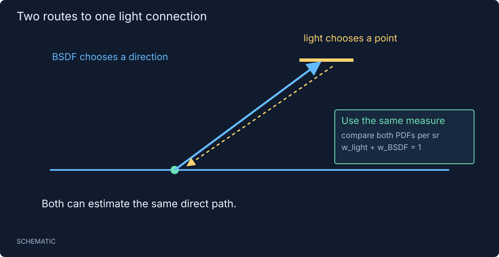
Russian roulette handles long paths. If a path survives with probability q, divide its surviving weight by q: . This removes work without changing the conditional expectation. A fixed maximum depth removes all longer paths and introduces truncation bias. For refractive paths, the survival heuristic should account for refractive-index scaling so that a temporary radiance-scale change does not terminate useful paths prematurely. Our opaque examples avoid that extra state.
Trace the numbers. A cosine-sampled diffuse interaction with reflectance 0.6 changes β from 1 to 0.6. A second with reflectance 0.5 changes it to 0.3. If roulette then survives with q=0.4, the surviving path carries β=0.75, and otherwise contributes zero. The expected weight remains 0.3. If the next event is an emission value of 8 with no competing strategy, its expected camera contribution is 2.4. This arithmetic tests path weighting; it does not stand in for the visibility and sampling probabilities of an entire Sponza pixel.
The executable numerical examples check the Jacobian, diffuse integral, PDFs, MIS partition, roulette, and cache iteration introduced in this article. The small CPU path tracer remains available to step through a complete renderer. Sponza's image reference is rendered by Unreal's path tracer with the same scene setup; the two renderers serve different tests.


These are real Unreal path-tracer accumulations of the imported atrium, with eight maximum bounces and denoising disabled. The capture reads the accumulated sample index before and after each screenshot; the counts above are observed, not just requested console settings. Both images use the same materials, captured-scene SkyLight, sun, fixed exposure, and display transform. Reference-atmosphere tracing is disabled so that the path tracer retains the scene's SkyLight illumination. This matches the lighting inputs; it does not make the two renderers' material, visibility, or atmosphere implementations identical.
The remaining grain is useful evidence. A single bright sample is not a stable feature to ask Lumen to reproduce. Conversely, a stable colored bounce on the arcade stone should survive increased sampling. Use the larger accumulation to locate those structures, then return to the smaller one to see which features were still uncertain. The sample-counter and runtime records retain the accepted captures and the rejected attempt whose accumulation reset during capture.
Give the estimator a frame budget
Our path tracer can compute a plausible Sponza image without knowing anything about cards or probes. Why introduce them? Consider a hypothetical 1920×1080 frame, 64 paths per pixel, and an average of four traced segments per path. That is about 531 million intersection queries before counting shadow connections. This arithmetic is a workload example, not a measured Unreal cost. Reducing it to one path per pixel removes work but leaves unstable noise, especially in the arcade and narrow glossy reflections.
At the whiteboard, look for repeated questions. Adjacent pixels often hit nearby parts of the same stone surface. Many rays strike the same courtyard wall. A stationary wall receives similar lighting in consecutive frames. A rough surface integrates a wide angular region, making some directional detail less important. These observations suggest three different kinds of sharing: reuse surface material and lighting, reuse incoming directional lighting near a receiver, and reuse previous measurements over time. Each one needs a rule for deciding when the shared answer is still applicable.
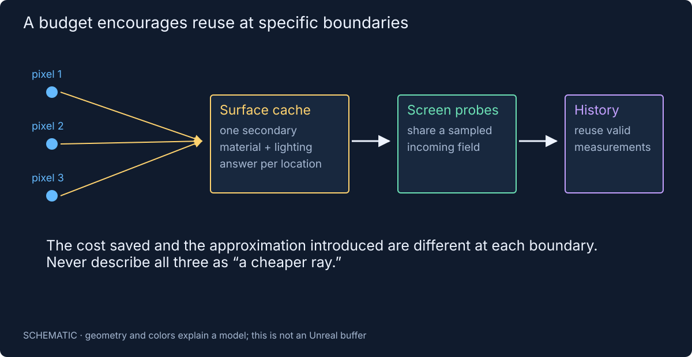
Keep the contributions separate before approximating them
At the visible point, split the BSDF into diffuse and glossy components, . Also choose a set A of explicit analytic lights—such as the sun and a rectangular test light—whose direct contributions will be evaluated by the direct-lighting path. Let contain their direct incident field and contain the remaining incoming field. R includes reflected light from surfaces, but it can also include direct sky and emissive-mesh connections. Then
LaTeX source
L_o=L_e+
\underbrace{\int(f_d+f_g)L_{i,A}\,d\sigma_x^\perp}_{\text{explicit direct lights}}
+\underbrace{\int f_d L_{i,R}\,d\sigma_x^\perp}_{\text{remaining diffuse}}
+\underbrace{\int f_g L_{i,R}\,d\sigma_x^\perp}_{\text{remaining glossy}}.This is an exact partition after the source sets are defined. The approximation begins when we choose how to evaluate each term. Rasterization will supply the primary visible point. Deferred lighting and shadow maps will handle explicit direct lights. Lumen will estimate and reconstruct much of the remaining illumination. The renderer's names “direct” and “indirect” describe responsibilities; they are not a reliable count of scattering vertices. In particular, Lumen can supply a direct sky contribution at the primary surface.
Now follow sunlight that first hits courtyard stone y and then illuminates arcade floor x. The direct-lighting result at x does not include that path. The cached direct lighting at y is therefore a legitimate input to indirect illumination at x. Removing it because “direct lighting was already added” would delete real reflected light. Conversely, if an emissive mesh and an analytic light both represent the same lamp's energy, the scene author must define their ownership; creating two independent emitters can double the physical source before any estimator is evaluated.
Which changes are unbiased, and which change the answer?
Importance sampling and correctly weighted roulette change the distribution or amount of work while preserving the intended expectation. Spatial interpolation, directional compression, simplified geometry, temporal clipping, and diffuse secondary-hit shading generally change the estimated field. More samples reduce Monte Carlo noise around that changed field; they do not automatically recover the original scene.
A compact way to express the distinction is to write the exact transport problem as . Here b is emission and T means one scattering-and-propagation operation. Expanding it gives , the same sequence of paths derived earlier. A finite cache stores coefficients c. Let P project a field into those coefficients and R reconstruct it. An explanatory cached update is
LaTeX source
c_{t+1}=P b_h+P T_h R c_t,\qquad \widetilde L_t=R c_t.The subscript h indicates represented geometry and material. This is a model for reasoning about approximation, not a claim that Epic stores a global matrix or runs a uniform Jacobi solver. The actual system updates selected pages and probes with different histories and budgets. The model nevertheless exposes three distinct errors: a wrong represented source, a wrong transport/reconstruction operator, and an incomplete or stale update.
Derive the approximation error instead of calling it “close enough”
For a stationary linear teaching model, write the reconstructed fixed point as L̃ = b̃ + T̃L̃, with b̃ = RPbₕ and T̃ = RPTₕ. Subtract the exact equation L = b + TL and collect the unknown difference:
LaTeX source
(I-\widetilde T)(\widetilde L-L)
=(\widetilde b-b)+(\widetilde T-T)L.If the chosen operator norm satisfies ‖T̃‖ < 1, its inverse expands as a convergent geometric series. Therefore
LaTeX source
\|\widetilde L-L\|\le
\frac{\|\widetilde b-b\|+\|\widetilde T-T\|\,\|L\|}{1-\|\widetilde T\|}.The numerator separates changed sources from changed transport. The denominator shows why repeated interreflection can amplify a local error. This conditional bound is not a measured Lumen error bar: production clamping, visibility decisions, moving scenes and adaptive scheduling are not one stationary linear operator. It tells us what a convergence test can establish under a precisely stated model. At an unfinished iteration, add the difference between its current state and this approximate fixed point; stochastic sampling contributes variance around the update as well.

Two surfaces are enough to distinguish the errors. Let and . Starting from (1,0), successive substitutions give (1,0.3), (1.06,0.3), (1.06,0.318), and converge to approximately (1.06383,0.31915). If a visibility or material approximation changes the second coefficient to 0.25, the converged result becomes approximately (1.05263,0.26316). Both iterations stabilize. Only the first solves the original pair of equations.
This suggests a debugging order. First establish that the queried geometry and source exist. Then establish the meaning and exposure of the stored values. Then inspect interpolation and history validity. Only after those contracts are correct should a sample-count increase be interpreted as a convergence test.
Start at update zero, then advance. Each step uses both values from the previous step, so this is a Jacobi iteration. Switch the coupling to 0.25: the sequence still converges, but to a different answer. More updates remove this toy model's iteration error; they do not repair its altered transport. Actual Lumen has interleaved updates and selected page budgets.
Source-level starting values: actual captures must record their runtime overrides
| Representation | Inspected starting value | What consumes the budget |
|---|---|---|
| Screen probes | 16-pixel downsample factor; 8×8 directional trace cells; adaptive allocation fraction 0.5 | Receiver count × directional work, plus refinement, filtering and reconstruction |
| World radiance cache | 48³ logical grid cells per clipmap; 32×32 directional probe resolution; 100-probe update budget; one mip | Demanded physical probes and selected updates, not every logical cell every frame |
| Card radiosity | Probe spacing 4 card texels; 4×4 hemisphere trace pattern; four SH coefficients | Selected card regions, ray traces and irradiance reconstruction |
| Dedicated reflections | Maximum roughness 0.4; fade length 0.1; maximum ray intensity 40 | Classified receiver tiles, traced rays, hit shading, resolve and history |
These are source defaults, not universal runtime settings or a measured performance claim. Scalability, post-process quality and mode-specific adjustments can change the effective values. For an illustrative 1280×720 view at 16-pixel spacing, the uniform grid has 80×45 = 3600 probes. At 64 directions each that is 230,400 direction slots before adaptive probes and branch-specific work. A 50% adaptive capacity permits up to 1800 additional probes, but allocated capacity is not proof that all are active. Compaction counts reveal the work actually dispatched.
The relevant defaults live in screen-probe placement and resolution, radiance-cache budgets, and card-radiosity sampling. A memory and dispatch ledger should accompany a real implementation from its first working version.
The deferred frame: store the visible surface
A map of the complete frame
Keep this map beside the later implementation steps. Read A as the camera's stored surface interaction, B as the geometry available to secondary rays, C as cached outgoing surface radiance, and H as retained state. The three primary-view branches answer different parts of the same rendering equation: explicit direct-light connections, the remaining diffuse field, and the remaining glossy field. Their contributions meet in scene-linear composition before display processing.
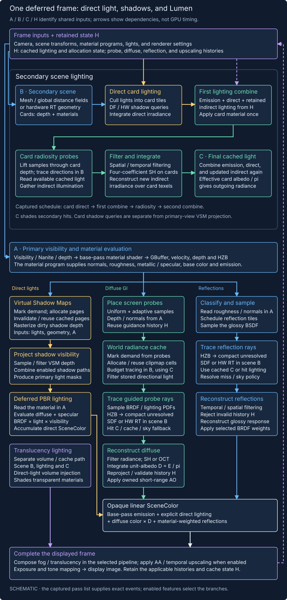
Two boundaries deserve attention. Primary VSM projection supplies shadow visibility for deferred direct-light BRDF evaluation; card direct lighting has its own secondary-surface shadow queries. Also, the captured card schedule combines lighting both before and after radiosity. The first combine exposes fresh direct illumination with retained indirect illumination to the radiosity traces; the second incorporates their newly integrated indirect result. Neither the cache diagram nor its feedback arrow means that every frame advances exactly one light bounce.
The captured invocation makes the distinction between dependency and timing concrete: card lighting and both combines occur before the base pass; screen-probe integration and reflection reconstruction occur before the recorded primary VSM projection and deferred sun-light pass. Their results are consumed by the later diffuse-indirect composition. The captured-frame explorer and evidence retain the individual passes and bindings; the map supplies the system-level reading order.
Follow the yellow branch into the dedicated Direct lighting chapter, and the blue glossy branch into Reflections. The chapters below explain each branch's inputs, sampling, intermediate state, and contribution to the same final image.
Before inventing a global-illumination cache, build a dependable first interaction. A camera path tracer finds it by tracing a ray. A deferred renderer rasterizes visible triangles into depth and material records. At a covered pixel, both methods are trying to identify the surface the camera sees. Rasterization amortizes this work over coherent screen samples and lets many lighting operations reuse the result.

Construct and decode the GBuffer
For a minimal implementation, store depth, a shading normal, diffuse/base color, roughness, metallic, specular or F₀ information, a shading-model identity, and velocity for later reprojection. Emissive output may be accumulated into SceneColor through the base-pass contract rather than occupying a universal “emissive GBuffer.” The exact layout depends on platform and shader permutation. Decode using the producer's layout; do not infer channel meanings from a screenshot's colors.
Material evaluation precedes this storage. Vertex attributes and interpolated texture coordinates enter the compiled material program. Texture samples, constants, and graph operations produce material properties; tangent-space normals are transformed into the shading frame. Opaque coverage is selected with the depth test. Masked geometry must apply its opacity decision in every representation that needs consistent visibility. Normalized textures, sRGB decoding, tangent handedness, normal normalization, and roughness remapping are computational inputs, not cosmetic details.
Depth is usually device depth, not distance in metres. Reconstruct the point with the appropriate inverse view-projection transform and homogeneous divide. In Unreal, reversed depth, translated-world coordinates, view-rectangle offsets, temporal jitter, and large-world origins all matter. In schematic form:
uv = (pixel + sample_offset - view_rect_min) / view_rect_size
clip = make_clip_position(uv, device_depth, projection_convention)
position_h = inverse_view_projection * clip
position = position_h.xyz / position_h.w
normal = decode_and_normalize_gbuffer_normal(pixel)
material = decode_material(pixel, shading_model_id)
outgoing = normalize(camera_position - position)A half-resolution lighting buffer must map back through the correct full-resolution view rectangle. A shifted depth lookup can look like bad GI at edges while being an addressing error. The reference's decoded GBuffer records preserve the actual channel layout and pixel arithmetic of the instrumented room frame.
Decode three actual Sponza interactions
Return to A and B on the foreground floor and C on the polished gold sphere. The following images decode the final scene invocation of one captured GPU frame. They use its 1280 × 720 view rectangle; the backing textures are 1280 × 888, so the unused bottom rows are excluded. The pictures answer four different questions about the same interaction.

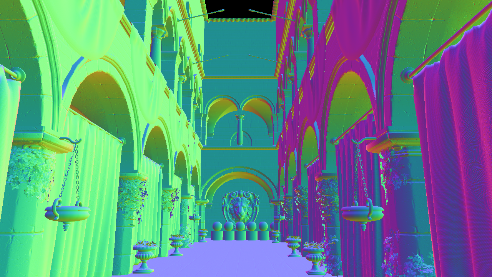


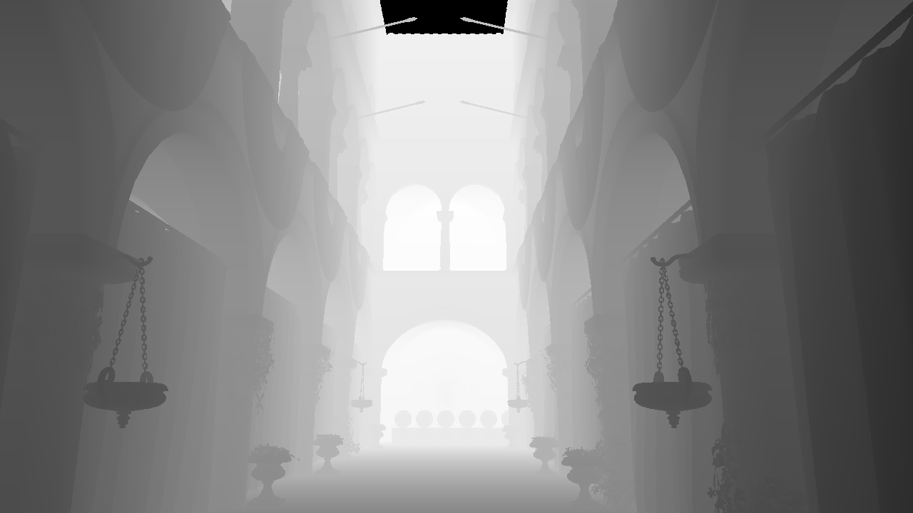

The normal image maps each normalized component using 32 + round(223(N/2 + 1/2)); roughness uses 32 + round(223r). Reserving black for invalid pixels distinguishes missing geometry from a valid zero channel. BaseColor is decoded to linear RGB and displayed with the sRGB transfer function, reserving code 0 for invalid pixels. These are declared data displays, not alternate exposure settings. The figure manifest records every mapping and range, including separate metallic and validity images.
Pixel addresses, material codes, and reconstructed positions
| Quantity | A: lit floor | B: shaded floor | C: polished gold |
|---|---|---|---|
| Pixel (x, y) | (500, 680) | (720, 680) | (626, 587) |
| World position, cm | (−19.7181, −120.3138, −2.0052) | (−19.7199, 69.4282, −2.0050) | (828.4255, −24.0599, 61.3765) |
| Forward depth, m | 7.88305 | 7.88303 | 16.28969 |
| World shading normal | (0.01466, −0.08700, 0.99610) | (0.00489, 0.00684, 0.99996) | (−0.98961, 0.12993, 0.06155) |
| Linear BaseColor | (0.11444, 0.09531, 0.06848) | (0.24228, 0.20156, 0.14413) | (1, 0.76815, 0.33716) |
| GBufferB bytes in memory, B G R A | 240, 255, 0, 177 | 228, 255, 0, 177 | 20, 128, 255, 161 |
| Roughness | 240/255 | 228/255 | 20/255 |
| Metallic / specular parameter | 0 / 1 | 0 / 1 | 1 / (128/255) |
| Shading model | DefaultLit | DefaultLit | DefaultLit |
The capture uses the legacy GBuffer route: Substrate is off, GBufferFormat is 1, static lighting is off, and GBufferC alpha holds AO. For example, C's GBufferC memory bytes are (157,227,255,255), so the RGB codes are (255,227,157), which decode to the linear gold color above. The two floor points are different texture samples: their color and normal differences must remain in any numerical lighting comparison.
The full receiver record retains all sampled bytes, packed words, material channels, neighboring-pixel checks, formats, row pitches, hashes, and producing/consuming versions. GBufferA/B/C/D were written at pass 697, GBufferF at 700, and the direct-light consumer is pass 842; the consumed GBuffer and depth copies are byte-identical to the recorded producers. The view record gives the inverse transforms and both independent world-position reconstructions. Unreal's depth linearization yields centimetres in this scene; divide by 100 for the metre values above. The view's PreExposure is 1/2048, while these material and geometric channels have no exposure factor.
Read the material before the light. Pick courtyard stone and the metallic test sphere. In the base-color view both may look bright. In the metallic view they should differ. In the roughness view the polished sphere should be low. In the normal view the sphere's smooth gradient should differ from the stone's mapped detail. If these inputs are wrong, changing Lumen's ray budget cannot produce the intended reflection.
Direct lighting: evaluate lights and their shadows
Start at courtyard point A. A direct connection joins the light to A and then A to the camera, without another scattering surface between the light and A. We already know A's position, normal, material, and outgoing camera direction from the GBuffer. This chapter supplies the other half of that interaction: which lights reach A, how much incident energy they supply, whether geometry blocks them, and how A scatters that energy toward the camera.
“Direct” does not mean “diffuse.” The same analytic light can produce both a broad diffuse response and a narrow specular highlight. Conversely, a reflection of a sunlit wall contains a secondary surface interaction and belongs to the scene-reflection path. Keeping this ownership clear prevents a direct highlight from being added once by deferred lighting and again by an overlapping reflection estimate.
Turn each light type into an incident-light query
For each relevant analytic light, determine its direction or finite-source distribution, radiometric scale, attenuation and support, visibility, and the material response. The point-light ideal is proportional to intensity divided by squared distance. Engine attenuation also includes finite influence and source-shape conventions. A finite rectangle subtends an angular region; evaluating it requires an integral or an approximation such as the engine's area-light treatment. It is not physically equivalent to a point source just because both share a light center.
For ideal point and directional lights, let denote the incident irradiance on a plane perpendicular to the light direction at x. For a point source of radiant intensity , it is ; for an ideal directional source it does not decay with receiver distance. With the common geometric/shading normal n used in our first model, the owned direct contribution is
LaTeX source
L_{\rm direct}(x,\omega_o)=\sum_{\ell\in\mathcal L_D}
f_s(x;\omega_\ell\!\to\!\omega_o)\,
E_\ell^\perp(x)\,\max(0,n\cdot\omega_\ell)\,V_\ell(x).This writes the directional delta source through its integrated weight, rather than pretending it has an ordinary finite radiance density over solid angle. A spotlight additionally restricts the angular support and varies intensity within its cone. A production local light also has a finite influence bound and source-shape parameters. A finite area source returns to the area/solid-angle integral derived earlier: different source points can have different directions, distances, BRDF values, and visibility. Replacing that integral with one center sample changes the target, especially near large sources.
Check the multiplication before building the shadow system. Give a Lambertian receiver reflectance 0.6 and zero emission. Let one prescribed light supply perpendicular irradiance 10 W m⁻², with incident cosine 0.5 and visibility estimate 0.75. The irradiance reaching the surface is 10 × 0.5 × 0.75 = 3.75 W m⁻². Its outgoing diffuse radiance is (0.6/π) × 3.75 ≈ 0.7162 W m⁻² sr⁻¹. A specular material adds the corresponding specular-BRDF response to this same owned source. This analytic example tests units and factor placement; the Sponza values below use Unreal's recorded RGB calibration.
Evaluate the material at the receiver
A basic direct-light implementation can start with point and directional lights, exact shadow rays, and the diffuse-plus-GGX BSDF already derived. Then replace only the visibility query with a shadow-map query. That gives a controlled before/after test: the BSDF and source stay fixed while the visibility representation changes. Tiled or clustered light lists avoid evaluating every scene light at every pixel. These lists are culling structures, so a false negative loses illumination; a conservative false positive merely costs work.
for light_id in lights_overlapping_pixel_or_cluster:
light = decode_light(light_id)
incident = evaluate_light_geometry_and_radiance(light, position)
visibility = evaluate_shadow(light, position, normal)
brdf = evaluate_diffuse_plus_specular(material, incident.wi, outgoing)
scene_color += brdf * incident.radiometric_factor * visibilityThe factor in this pseudocode includes the incident cosine and whichever source integration convention the chosen light uses. A production function may return a preintegrated lighting contribution rather than raw radiance. Its units and cosine placement must be documented before multiplying it by another helper.
In a deferred implementation, decode the shading-model identity before interpreting its material payload. A Default Lit metal uses its base color primarily as colored specular reflectance; a dielectric retains a diffuse color and its interface reflectance. Compute the light/view half-vector and the selected distribution, visibility, and Fresnel terms in the same normalized shading frame. The source may fold the microfacet denominator into a visibility helper and may integrate a finite source analytically. Multiplying a textbook GGX denominator around that helper a second time is a different BRDF. The earlier microfacet derivation supplies the target; the selected shader supplies its implementation convention.
Light culling and light evaluation are also separate. A light volume, screen rectangle, tile list, or cluster list decides which receivers might be affected. Attenuation, cone support, lighting channels, light functions, and shadowing decide the contribution after that conservative selection. The captured Sponza sun uses a standard deferred light pass. The teaching loop describes ownership and arithmetic, not a claim that this particular sun was dispatched through a tiled light-list kernel.
Follow that multiplication in the captured legacy GBuffer route: the deferred lighting accumulator computes local attenuation, obtains the applicable shadow terms, calls IntegrateBxDF for the selected source shape, applies the light's diffuse/specular scales, and accumulates the split result with attenuated light color and surface shadow. That helper's source integration is already part of the returned lighting. The example capture has Substrate disabled; other material permutations require their own decode and integration contracts.
Construct the shadow views from the light
We know which surface the camera sees. Shadowing asks a different visibility question: what lies between that surface and a particular light? A shadow map answers by rasterizing the scene from a light-dependent view. Its texels store the nearest represented blocker along that view's rays. The primary camera supplies receivers that need answers; it is not the camera used to render the shadow depth.
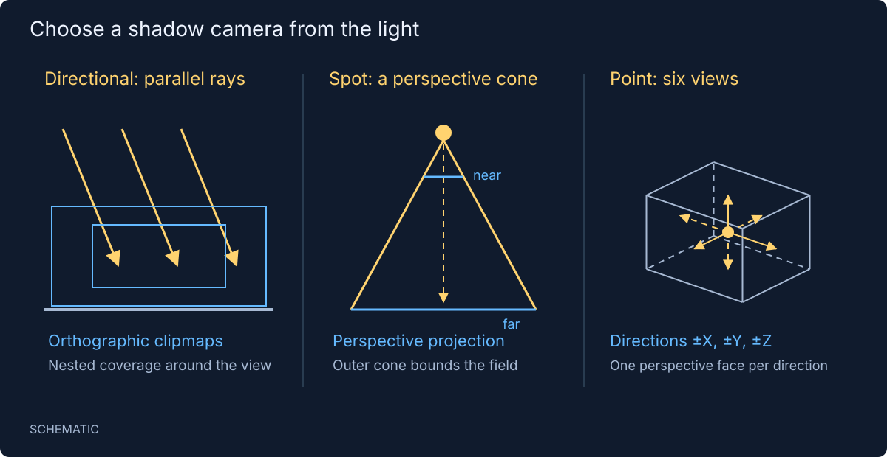
A directional light needs position-dependent coverage, not perspective foreshortening
An ideal directional light supplies parallel incident rays. Build an orthonormal light-space frame with two transverse axes a and b and a depth axis. In a teaching orthographic view centered at c, with transverse half-width R, a world point x maps to
LaTeX source
u=\frac12+\frac{a\cdot(x-c)}{2R},\qquad
v=\frac12-\frac{b\cdot(x-c)}{2R}.The sign on v is a chosen texture-coordinate convention. Unlike perspective projection, there is no division by distance along the light ray. A column does not shrink in the sun's shadow image merely because it is farther from an arbitrarily chosen light-view origin. We still need a finite depth interval that includes relevant casters, a world-to-light transform, and a finite transverse region to store.
One enormous orthographic map would spend the same texel density everywhere. Directional VSM clipmaps instead provide nested light-space coverage around the view, with increasing world-space footprint at coarser levels. A receiver selects a suitable level; virtual pages provide sparse storage within that level. Clipmap level and texture mip level are different indices. In the captured sun, IDs 8192–8208 represent clip levels 6–22; the storage example below uses ID 8196, clip level 10, at logical mip 0.
Stable placement matters as much as resolution. If the light-space grid followed every subtexel camera translation continuously, the same stationary edge would move across depth texels every frame. Snapping and maintaining the clipmap's grid makes reuse possible. When coverage scrolls, the system can retain overlapping world regions and request newly exposed pages, provided the represented light transform, depth range, and validity state remain compatible.
The actual clipmap placement snaps the light-space center to a level-dependent grid. The reversed-Z orthographic matrix sets its transverse extent and depth range, while receiver level selection begins with the logarithm of distance from the clipmap origin. This is a spatial resolution policy, not a change to the physical direction of the sun.
Local lights need perspective directions and a finite influence bound
For a local source at o, let q = x − o and d be its component along a selected shadow face's forward axis. If θ is that face's horizontal half-angle, its horizontal coordinate in a symmetric perspective view is
LaTeX source
u=\frac12+\frac{a\cdot q}{2d\tan\theta}.The vertical coordinate has the corresponding vertical half-angle and texture-axis sign. This division by d is what lets rays diverge from a point. A spot light uses its orientation and outer cone to choose a perspective frustum. Its attenuation radius bounds how far the implementation searches and casts; the outer cone bounds angular support. The inner cone changes light intensity, so it should not be mistaken for the boundary of the shadow view.
A point light illuminates directions around its position. Six perspective views, facing ±X, ±Y and ±Z, cover those directions as cube faces. Each face has its own virtual-page region and projection. The selected direction determines the face; a point close to a face boundary needs consistent face selection and filtering, or the shadow develops seams. The light's influence radius also limits the caster and receiver region. This finite bound is a rendering policy; an ideal mathematical point source's inverse-square field does not become exactly zero at that radius.
The pinned engine's rectangular-light whole-scene shadow initializer also selects the one-pass point-light/cubemap route. This does not turn the rectangular emitter into a physical point source: its finite shape still matters to direct-light evaluation, while its VSM soft-shadow path uses an additional approximation. It means the stored visibility representation is built from that selected set of projection views. A true area-light visibility integral would ask for visibility from many different emitter positions. VSM soft-shadow estimation uses the stored depth representation to approximate those connections, rather than rasterizing a separate complete shadow map for every point on the emitter.
That approximation is concrete in this version: the rect light supplies half its width as SourceRadius and half its height as SourceLength. The inspected local VSM ray generator samples a disk using SourceRadius; it does not sample the rectangle using both dimensions. Thus the stored cube depth and the disk-based soft-shadow estimate are each approximations, separate from the rectangle used by the direct-light BRDF integral. Follow the rect shadow initializer, rect source parameters, and local SMRT ray generator. Do not generalize this contract to a separate ray-traced area-shadow implementation.
The local-light implementations make the bounds concrete: the spot initializer uses inverse tangent of the outer cone, while point and rectangular initializers select the cubemap path. All three retain a near limit and a maximum casting distance. These parameters belong in the projection record alongside the light identity; they cannot be inferred from a depth texture's width and height. The spot initializer supplies the cone scale; the six-face setup supplies face directions, up vectors, and a 90-degree perspective matrix with near depth 1 and far depth equal to the light radius. Those are the actual cube-projection values, even though the earlier initializer also carries its own minimum-light-depth field.
Rasterize casters into the requested depth pages
Start with an ordinary nonvirtual shadow map. For each eligible caster triangle, apply its current object deformation and transform, then the light-view and projection matrices. Clip against the light frustum, rasterize the projected triangle, and evaluate any required masked-material coverage. At each covered depth texel, retain the nearest blocker in the chosen depth convention. The material's albedo and final shaded color do not belong in this depth image. Material coverage and vertex motion can still change which fragments reach it.
Let d be positive forward depth in a perspective shadow view with near and far depths denoted by the subscripts “near” and “far”. A reversed-Z teaching projection has the form A + B/d. Requiring the near plane to map to 1 and the far plane to 0 gives
LaTeX source
z(d)=\frac{d_{\rm near}d_{\rm far}}{(d_{\rm far}-d_{\rm near})d}-\frac{d_{\rm near}}{d_{\rm far}-d_{\rm near}}.For an orthographic view the corresponding mapping is linear, z(d) = (far − d)/(far − near). These formulas describe projection depth, not linear radiance. Closer blockers have larger z under this convention. A clear value of zero represents the far end of an otherwise valid empty depth image. With a positive floating-point depth encoding, unsigned integer ordering preserves the order of those depth values; this lets the virtual-depth raster path use an integer maximum operation on their bit patterns. The sampling path later reinterprets the word as a float.
Now virtualize the same operation. Receivers mark needed light-space pages and resolution levels. Allocation supplies physical tiles and their state. Caster culling determines which scene instances and triangles overlap those requested page frusta. The raster path translates each covered virtual texel to its physical tile and writes depth there. Nanite and conventional geometry have different submission, culling, and raster implementations, but both must satisfy the same address, depth, and validity contract before projection samples the result. In the conventional VSM depth pixel shader, a decoded page must have rendering validity before InterlockedMax writes asuint(DeviceZ) to the translated address. The static-page bit chooses the static cache slice; other depth goes to slice zero.
For an ideal single depth comparison at receiver x, a simple reversed-Z visibility estimate is
LaTeX source
\widetilde V(x)=\mathbf 1\!\left[z_s(u(x),v(x))\le z_r(x)+\epsilon(x)\right].Here zₛ is the stored blocker depth, zᵣ is the receiver depth in the same projection, and ε represents a declared comparison bias in these depth units. A positive bias makes this simple test more permissive. The production path has receiver-normal, slope, footprint, and soft-shadow rules that must be followed in their own units and order. Increasing ε arbitrarily can hide acne by detaching shadows and admitting light through thin blockers.
A finite source produces partial visibility because different source points can be blocked differently. Filtering a depth representation is therefore an approximation to a visibility integral. SMRT walks selected rays through shadow-map depths to estimate that soft visibility. A single stored nearest depth does not reveal all the occluders behind it; more filter samples cannot recover a layer the representation never stored. The later captured mask is the output of that process, not simply a grayscale copy of the depth pool.
Moving lights change the meaning of cached depth
Imagine moving a point light sideways while leaving every wall fixed. The same wall projects to different cube-face texels, and its depth changes relative to the new light origin. Keeping the old depth pages and merely replacing the light matrix would compare new receiver coordinates against old caster coordinates. A moved local light therefore requires compatible cache invalidation and refreshed shadow views. Rotating a directional light similarly changes the light-space projection of the entire scene. The pinned cache keys contain WorldToLight, PreShadowTranslation, and distant-light status for a local light, and light direction plus first level for a directional clipmap. Changing a key invalidates the rendered-frame state; the subsequent uncached render establishes reusable contents.
Moving only the primary camera is a different operation. It changes visible receiver demand and directional-clipmap coverage, while a stationary light and stationary caster can still describe the same world-space depth in overlapping valid pages. A moving caster instead invalidates the pages intersected by its old/new affected bounds. Deformation, world-position offset, masked coverage changes, and changes to shadow-casting participation also belong in the invalidation policy. Updating an object's transform without updating its shadow dependencies leaves an apparently stable but stale cache. The implementation projects affected instance bounds into allocated pages and sets invalidation flags there. For camera motion, clipmap reuse retains the cached depth interval and records a page-address offset while the depth guard band and other validity tests remain satisfied; it invalidates the level when they do not.
Separate static and dynamic depth storage can preserve static geometry while dynamic geometry is cleared and rendered again, then combine the required depths for sampling. Here the static/dynamic merge takes the maximum of the two stored reversed-Z words, so the nearer represented blocker wins; the merge is dispatched for pages selected by the corresponding dirty-state path. A physical allocation, an initialized tile, a cacheable tile, and a tile whose contents are valid for the current projection are distinct states. The storage section below decodes those records independently. Its request counter uses a scene-frame numbering domain; it must not be substituted for a screen-probe history count or the frame number shown in another capture.
Changing only a light's intensity or color does not geometrically change the ideal shadow depth. It changes the lighting multiplied by visibility. That physical distinction is useful when designing cache keys, even if a production update path conservatively invalidates more state after a light-proxy change. Position, orientation, shape-dependent projection, influence bounds, and caster state need explicit treatment rather than a rule that every property change is equivalent.
A light or caster can be outside the primary image
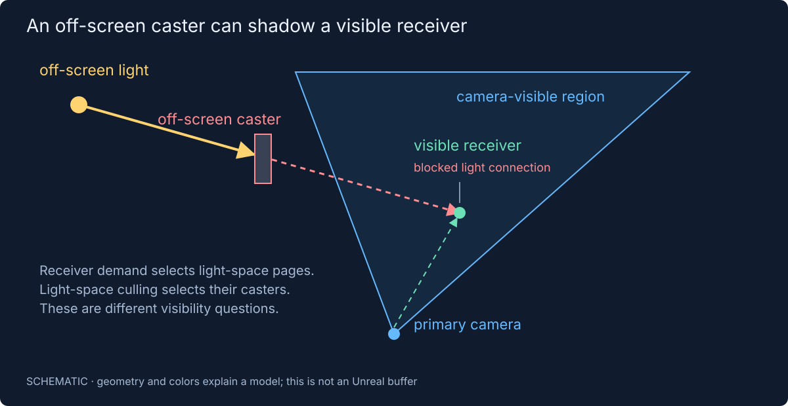
First consider an off-screen light. Its source position may project outside the image while its influence volume overlaps visible floor or walls. The renderer must retain it for those receivers. A point-light sphere, spot cone, or other conservative influence bound is a culling object; the source's screen coordinate alone is not an adequate culling test. A directional light is an even clearer example: its influence is not restricted to the pixels containing a visible sun disk.
Next consider an off-screen caster. A column behind the camera can stand between a visible floor point and a local light. The floor marks a page in the light's projection. Rendering that page must consider eligible geometry in the corresponding light-space caster region, including geometry omitted from the primary camera's color and depth buffers. Raster shadow maps can therefore represent this shadow even though a screen-depth-only trace cannot see the column. Culling casters solely against the primary view would be a correctness error.
Finally consider an off-screen receiver. It creates no primary opaque-pixel demand in this view, but the renderer may need broader/coarser shadow coverage for other consumers, such as translucent lighting and volumetrics. Those consumers have their own request and sampling policies. An opaque screen receiver's fine page requests do not prove that every off-screen secondary surface has equally fine coverage. In Lumen, card lighting and hit-lighting paths must use their selected shadow-query route; they do not acquire a correct shadow simply by copying the primary camera's shadow-mask pixel.
Read the source at the distinction: local receiver marking queries the culled light grid at visible depth, then applies radius, cone, and rect-facing tests; local caster culling uses the light's bounds and caster frustum. Directional coarse pages and local coarse pages provide broader coverage for their consumers. This page-marking path has no Lumen-card receiver input. Those facts explain both why an off-screen blocker can cast a visible shadow and why fine primary-view coverage cannot be assumed for every secondary surface.
Virtual Shadow Maps: spend depth storage where receivers need it
A shadow map looks at geometry from a light and stores the nearest depth. Transform a receiver into the light's projection and compare its depth with the stored depth. If it lies behind the nearest occluder, that light connection is blocked. In Sponza, balcony rails and columns create rapidly changing visibility, so a low-resolution uniform shadow map loses detail while a huge one wastes storage elsewhere.

Virtual Shadow Maps separate a large logical address space from a smaller pool of physical depth pages. Visible receivers mark required pages at appropriate resolution. The system allocates physical pages, reuses valid cached ones, invalidates pages affected by moving geometry or lights, culls geometry into the requested pages, and renders their depth. A lookup translates the virtual address through the page table before reading the physical tile. Directional-light clipmaps supply scale and coverage around the view; local lights use their appropriate projections and mip levels.
Build a minimal virtual implementation in this order: a fixed light-space depth image; a tiled image with an identity page table; receiver-driven page requests; physical allocation with residency/validity bits; cached pages with explicit invalidation; then clipmaps or mips. At every stage compare the resulting visibility against the nonvirtual image. Otherwise allocation errors become indistinguishable from shadow bias errors.
The pinned renderer exposes these handoffs in page marking, allocation, and shadow rendering. After rendering and its page-state updates, the projection entry points distinguish local-light projections from directional clipmaps and composite their visibility masks. Allocating an address alone does not establish that its depth is valid for sampling.
Depth bias prevents the receiver's own numerical depth error from becoming a false occluder. Too much bias separates shadows from their casters and permits leaks. Filtering approximates the variation of visibility across a footprint or finite source. Unreal's Shadow Map Ray Tracing (SMRT) samples virtual shadow depths along rays used for soft-shadow estimation. It still works with a depth representation that may not contain every occluder layer. Missing layers, thin geometry, projection boundaries, and finite sample counts explain artifacts that a higher lighting sample count cannot fix. “VSM” here means Virtual Shadow Maps, not Variance Shadow Mapping.
Walk a virtual shadow address through allocation and sampling
Use a small teaching shadow image of 1024×1024 texels, split into 128×128 pages. There are 8×8 logical pages. A light-space receiver at uv = (0.31, 0.72) lands at texel (317,737), virtual page (2,5), and local texel (61,97), using floor and a half-open [0,1) image domain. Suppose page (2,5) maps to physical tile (7,3). Its physical address is then (957,481), before any implementation-specific border. This address is not meaningful until the projection/light identity and the residency entry are known.
// A teaching VSM cycle. Production layouts and packing differ.
Mark: project visible receivers; choose level; atomically mark page requests
Allocate: keep valid residents; assign free physical tiles to new requests
Invalidate: mark pages touched by changed lights or moving caster bounds
Cull: find casters overlapping requested dirty page frusta
Render: clear new/dirty page depth, then rasterize nearest occluder depth
Sample: translate light/level/page through the page table; compare depthsRendering must happen before a newly allocated page becomes sampleable. A page can be resident but dirty; allocation alone does not mean its old contents describe this light. A finite memory pool also needs a defined overflow policy. Unmapped pages must produce a diagnosed fallback, not an uninitialized read. Keep request count, allocation count, cached reuse count, dirty count, and overflow count visible during development.
For a conventional depth that increases away from the light, a minimal comparison is visible if receiverDepth ≤ storedDepth + bias. Reverse the ordering when the actual stored depth convention reverses it. For a finite area source, the ideal direct estimate integrates visibility over source points. Filtering and SMRT approximate that varying visibility using the depth representation and finite samples. They do not turn a single depth layer into a complete geometric model of every source-to-receiver segment.
Read the storage before interpreting the shadow
A shadow mask is the answer to a visibility query. The physical depth pool is one of the data structures used to obtain that answer. Its neighboring tiles need not depict neighboring pieces of Sponza: the allocator places whichever virtual pages need storage into available physical slots. To recover a light-space image, we must follow the page table in the opposite direction, gathering the physical tiles into their virtual locations.
Keep three questions separate. Which virtual address did this light projection request? Which physical tile currently backs that address? Which depth values in that tile are valid for this query? The page table answers the second question; flags and cache metadata constrain the third. A bright page-table color is an address category, not a bright light or a nearby occluder.

The physical pool is 16,384×4,096 texels, with two captured array slices. Projection samples slice 0; the separately cached static depth uses slice 1 in this configuration. Each slice occupies 256 MiB at four bytes per texel. The free slots do not provide useful shadow answers merely because memory exists for them. The smaller table and metadata let the renderer decide which parts of that memory represent a requested light-space region.

A directional fallback in this table selects a coarser clipmap level, still sampled at logical mip 0. For a local shadow map, the corresponding LOD mechanism can select a coarser logical mip of that map. Keep those policies distinct when translating an address. The large regions of the full map above are repeated fallback references, not thousands of separately rendered physical tiles.
Logical shadow mips, hardware texture mips, and hierarchical flags
A full VSM's logical mip 0 has 128×128 page entries. Logical mips 1–7 have 64², 32², 16², 8², 4², 2², and 1² entries. All eight regions fit inside one 128×192 block of the page-table texture's hardware mip 0. Relative to that block, mip 0 begins at (0,0); the tail begins at Y=128, with X offsets 0, 64, 96, 112, 120, 124, and 126 for mips 1–7. The selected map's block begins at global texel (640,0). Thus its logical-mip-zero page (63,65) occupies table texel (703,65).
The logical-level packing is separate from the PageFlags texture's hardware mip pyramid. Each PageFlags word uses the low six bits for allocation, dynamic uncached, static uncached, detail geometry, primary request, and secondary request. The hierarchy update ORs those flags into coarser texture mips at shifted addresses. It does not pack eight six-bit levels into a 32-bit word. The hierarchy lets a culling operation ask whether a larger page region contains relevant work without inspecting every leaf.
The page size in this source version is 128×128 texels. For a nonnegative integer virtual texel address u at an already selected level, split each coordinate into a page coordinate p and a local coordinate q:
LaTeX source
u=128p+q,\qquad p=\lfloor u/128\rfloor,\qquad q=u\bmod128.Read the page-table entry for this shadow-map identity, level, and p. If it supplies a valid physical page coordinate a at this same level, the physical texel address is t = 128a + q. The offset within a page survives the translation; only the page's location changes. A coarser fallback also changes the sampling level and virtual coordinates, so the same-level formula must not be applied blindly to an entry with a nonzero LOD offset.
Decode the complete 32-bit page-table word
| Bits | Decoded field | Meaning |
|---|---|---|
| 0–9 | Physical page X | Horizontal tile coordinate in the physical pool |
| 10–19 | Physical page Y | Vertical tile coordinate in the physical pool |
| 20–25 | LOD offset | Zero for this level; otherwise an offset to a coarser mapping |
| 26–28 | Unused bits | Preserved in the raw word; not interpreted as addresses or flags |
| 29 | Secondary request | Request classification carried by this entry |
| 30 | This level valid for rendering | Whether this entry can receive rendering at the queried level |
| 31 | Any level valid | Whether a valid mapping exists at some represented level |
The page-entry decoder and texel translation derive “this level valid” from bit 31 being set and the LOD offset being zero. A zero word is an invalid entry, not a valid reference to physical page (0,0). Rendering validity and sampling validity are separate predicates. The physical page's cache/dirty flags are a different record again; do not reuse this word's bit meanings to decode them.
For a concrete address walk, use the already decoded sunlit receiver A and shadowed receiver B. A declared center-sample replay selects sun shadow-map ID 8196, clip level 10, mip 0 for both. This is a reproducible storage query over the captured transforms and buffers; it does not reconstruct the unrecorded random SMRT ray sequence.
Two Sponza receivers followed through the same captured VSM storage
| Quantity | A: sunlit floor | B: shadowed floor |
|---|---|---|
| Screen pixel | (500, 680) | (720, 680) |
| Virtual texel | (8090, 8411) | (8301, 8100) |
| Virtual page p | (63, 65) | (64, 63) |
| Local texel q | (26, 91) | (109, 36) |
| Global page-table texel | (703, 65) | (704, 63) |
| Stored page-table word | 0xc000504f | 0xc0001017 |
| Physical page a; linear page index | (79, 20); 2639 | (23, 4); 535 |
| Physical texel t | (10138, 2651) | (3053, 548) |
| Raw depth word at t | 0x3efff6f3 | 0x3f000db7 |
| Reinterpreted stored depth | 0.499930948 | 0.500209272 |
| Receiver projection depth before bias | 0.499930967 | 0.499937844 |
| Separate captured shadow-mask attenuation | 1 | 0 |
Check A's address without tracing a ray. Its physical page (79,20) starts at texel (10112,2560). Add local texel (26,91) to obtain (10138,2651). The physical pool has 128 pages across, so its linear page index is 20 × 128 + 79 = 2639. These are storage coordinates; they do not measure a distance across the atrium. B is nearby on the screen but lives in a different physical-pool row.
Both words have a zero LOD offset, their any-valid and render-valid bits set, and their secondary-request bit clear. Their physical metadata points back to ID 8196 and the corresponding virtual page. That round trip checks the mapping before interpreting its depth. The complete records retain the separate page flags, physical flags, request counter, projection fields, and byte offsets.
What a physical depth texel actually stores
The projection shader's physical load reads an unsigned 32-bit word from pool layer zero and reinterprets its bits as a floating-point depth. It does not divide the integer by the largest possible integer. This distinction matters: the integer representation supports the renderer's storage and raster operations, while the interpreted floating-point value participates in the light-space depth test.

Stored device Z · larger means closer to this light
Every selected-depth view uses the same range, 0.4998…0.5003, with color coordinate t = (z − 0.4998)/0.0005. The 99 native pages contain 1,622,016 depth values, spanning approximately 0.499898583…0.500238657; none is zero. Expanding this narrow numeric interval makes the geometry legible without changing the stored values. Independent per-tile contrast adjustment would destroy this comparison. RGB quantization and thumbnail averaging still lose precision, so use the retained float and raw-word arrays for numerical work.
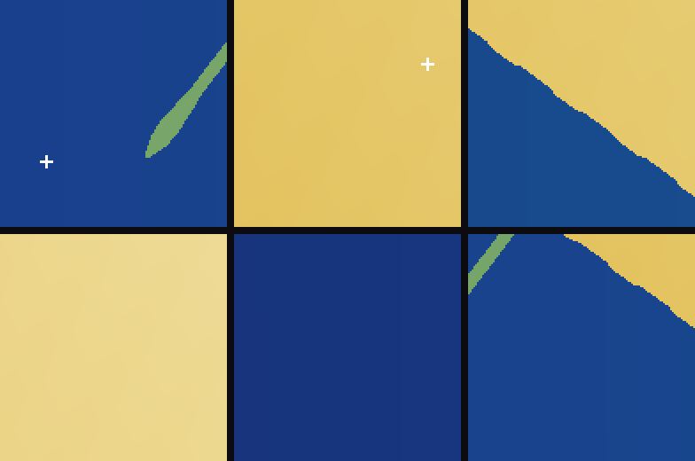
A's stored depth nearly equals its receiver projection, with a difference of about −1.86×10⁻⁸ before bias. B's stored depth exceeds its receiver depth by about 0.000271428, consistent with a blocker closer to the light in reversed Z. That is a useful storage check against the captured mask values of 1 and 0. It is not a proof that one center test reproduces SMRT: the actual ray directions, jitter, slope and normal handling, and individual sample decisions are not present in this memory snapshot.
A depth value belongs to its light projection and level. It is neither camera depth nor a distance in centimeters by itself. Clear depth inside a valid mapped page and storage in an unallocated page are also different states. The first can mean that no occluder was written at that texel; the second has no usable visibility interpretation. The visualization keeps those categories separate instead of turning both into black.
Physical-page records and the complete retained operands
Each physical-page metadata record contains six uint32 words: Flags, LastRequestedSceneFrameNumber, VirtualShadowMapId, MipLevel, and the two components of PageAddress. A and B both carry physical flags 0x5b and request number 904. Their independent PageFlags value is 0x1b. The extra 0x40 in the physical record means dynamic storage was initialized; it is not a page-table address bit.
| Bit | Meaning in physical-page metadata |
|---|---|
| 6, 7 | Dynamic initialized; static initialized |
| 8, 9 | Dynamic dirty; static dirty |
| 10, 11 | Invalidate dynamic; invalidate static |
| 12 | View uncached |
| 13 | Unreferenced in this render pass/frame; may remain cached if space permits |
| 14 | Force cached, including the special rendering/culling policy described in source |
| 15 | Deferred invalidation awaiting its per-frame budget |
Use the flag definitions and the 24-byte metadata layout. In particular, the 96 older records have the unreferenced flag set; an age comparison alone is not a validity test.
The complete storage record, numeric arrays, and array schema preserve the selected logical-mip regions, captured flag hierarchy, all physical metadata fields, all selected native depth pages, projection records, uniform values, receiver transforms, raw depth bits, byte offsets, and figure mappings. The full physical pools and original captured resources remain in the lossless native package. Resource versions and SHA-256 hashes connect every decode to those bytes.
This view is tied to native scene invocation 0004 and projection consumer pass 840. The physical metadata was captured at pass 810, before that consumer, and the selected-page owner identities were checked against the table. A capture version attached to pass 840 is not automatically evidence that pass 840 produced the table or pool. See the operand and snapshot report and portable decoder for the exact selection and verification contract.
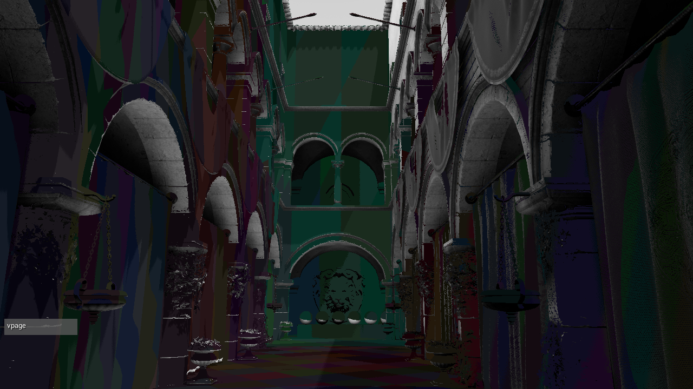

All three views show source pixels x=160…1039, y=200…719 from the same camera. Their colors are diagnostic categories overlaid on a scene view, not raw depths or linear visibility values. In particular, the blue cache view is not a blue light illuminating the atrium. The diagnostic record identifies the selected view mode. A numerical shadow lookup additionally needs the light/clipmap transform, page-table entry, physical-page address, stored depth convention, receiver bias, and filtering samples.
Follow the shadow result into the direct-light addition
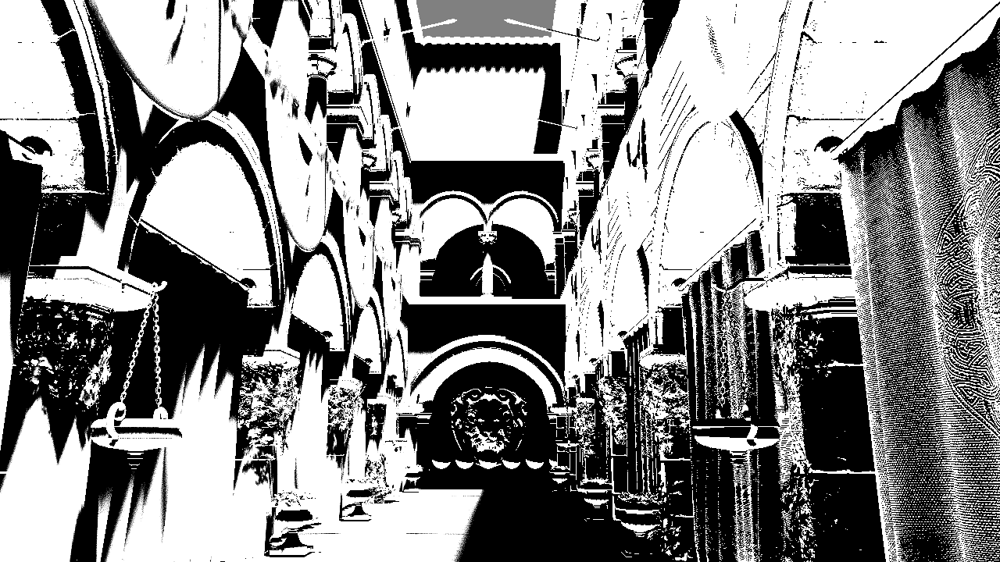


The mask texture stores square-root-encoded attenuation. Decode its red byte c as (c/255)²; treating c/255 as linear would brighten partially shadowed samples. At A the byte is 255 and the consumed attenuation is 1. At B and C it is 0. The sun pass adds pre-exposed RGB (1.9306641, 1.3037109, 0.7900391) at A and exactly (0,0,0) at B and C. Thus the gold sphere can be bright in the final image while receiving no contribution from this analytic sun at that particular point: its reflected incident field belongs to another term of our partition.
The encode/decode functions establish this square-root convention. The mask is a packed set of attenuation channels: the red channel carries this sun's whole-scene directional shadow, while other channels serve subsurface, per-object, or light-function terms in applicable branches. Decode the channels according to the selected light path; do not treat every four-channel shadow texture as four copies of one scalar visibility.
These are differences of captured FP16 SceneColor values across pass 842, RenderLight Light::StandardDeferred: Sun_Sponza, not an independently recomputed BRDF. Dividing by PreExposure = 1/2048 converts A's addition to scene-linear RGB (3954,2670,1618) in the engine's RGB calibration. Do not interpret those channel numbers as separately measured spectral watts. For the image only, each positive pre-exposed channel is mapped through L/(1+L), then the sRGB transfer function. The exact linear values remain in the receiver record.
What this shadow record proves, and what a depth-query replay additionally needs
The mask is the ShadowMaskTexture produced by pass 841 and consumed as PS.LightAttenuationTexture at 842. Its B and A memory channels remain clear; R and G agree on valid geometry in this capture. The observed red codes are 0,90,127,156,180,202,221,239,255, approximately the square roots of eighth-step visibility after quantization. The record preserves that quantization instead of inventing an unrounded shadow factor.
This proves the mask-to-direct-light boundary. It does not reveal each SMRT ray, virtual-page lookup, receiver bias, or depth comparison that generated the mask. The full frame package retains the VSM page tables, physical pool, projection data, parameters, and captured versions for inspection; the source-level lookup algorithm is explained above and in the VSM reference. Per-thread random choices and shader-local operands were not exported by this dump, so an exact claim about one dispatched SMRT path would require additional instrumentation. A declared replay over these resources must identify its selected samples separately from captured execution.
Mathematically, the direct-light path replaces exact geometric visibility V and some finite-source integration with an estimate and its sampling/filtering rules. The GBuffer provides the primary BSDF. Lumen does not need to recompute this same analytic direct contribution at the visible pixel. It does need direct illumination on secondary surfaces, because those surfaces become sources of reflected radiance for other points.
Implementation checkpoints and exact source reference
The existing VSM implementation reference follows page marking, allocation, invalidation, depth rendering, SMRT, and physical-pool decoding in the pinned source. It also records why a raw pool image cannot be interpreted without virtual-to-physical mappings. The material reference separates the legacy GBuffer route from Substrate and documents the compile-time permutations. Use those layouts for the selected capture rather than assuming every Unreal project has identical GBuffer channels.
Make a ray query that can see beyond the camera
The next task is to discover where an incoming-light query goes. From the shaded arcade, a sampled direction may hit a column, pass into the courtyard, or miss toward the sky. We could trace every query against full triangle geometry. Before paying that cost, inspect what the frame already knows: the depth buffer contains detailed visible surfaces, including the rasterized material geometry.
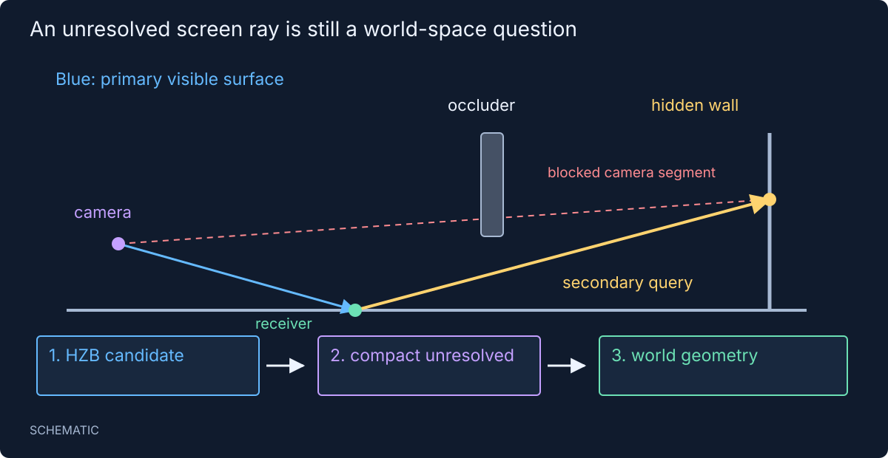
First try screen depth, but define what a hit proves
Project points along the ray into the camera. Compare the ray's depth with scene depth. A hierarchy of depth bounds lets traversal skip large screen regions when no intersection is possible and descend near a candidate crossing. This hierarchical Z buffer (HZB) is a min/max or conservative bound hierarchy according to its depth convention. With reversed depth, the intuitive meaning of “larger” depth reverses. Derive the comparison from the actual producer.
A depth crossing is not automatically a valid world hit. The screen stores frontmost visible surfaces, not closed volumes. A thickness test determines whether the crossing is plausibly near the represented surface. Edge uncertainty, missing back layers, view boundaries, and unsupported materials can require rejection. If accepted, the shader must obtain a suitable lighting value at the hit; it cannot sample arbitrary tone-mapped final color without changing the transport quantity and risking feedback.
result = trace_hzb(ray, depth_pyramid, thickness_rule)
if result.accepted:
radiance = sample_valid_screen_lighting(result)
else:
append_unresolved_ray(origin, direction, distance_interval,
receiver_id, sample_id, pdf, trace_flags)The output record is a contract. A compacted queue needs the original receiver/sample mapping so the result lands in the right directional cell. A hit bit must be distinct from a zero-radiance result: a black wall and a failed trace are not the same observation. The remaining distance interval and any bias must match how the next tracing stage interprets the origin.
Make traversal and fallback independently testable
Begin with a slow screen-space ray marcher at full-resolution depth. Transform the origin and direction into view space, clip the segment to the valid near plane and screen rectangle, and step through projected pixels. Use perspective-correct interpolation: a straight world-space ray is not a constant-depth linear interpolation in screen coordinates. Compare a conservative ray-depth interval against the represented surface-depth interval. Refine a candidate crossing before accepting it.
Then add the hierarchy. Each coarse HZB texel bounds the depths of its children according to the producer's convention. At a level, advance to the next projected cell boundary when the whole ray interval is safely in front of the represented bound. Descend when a crossing is possible. At the finest level, apply the thickness and hit-validity rules. Limit both the distance and iteration count. Leaving the view, exhausting steps, or finding an ambiguous crossing returns unresolved work, not certified empty space.
Test the optimized result against the slow marcher on a plane, a thin column, a staircase silhouette, and a ray leaving the screen. Then test both against actual world intersections. The first comparison finds traversal bugs; the second measures the representation's missing information. They answer different questions.
For world fallback, prefix-scan the unresolved flags into a compact list and preserve the original result address. Suppose rays 0,2,7 are unresolved: queue slots 0,1,2 must still write back to results 0,2,7. Keep hit distance, hit validity, and radiance validity separate. A valid black surface hit is useful geometric evidence even when its radiance is zero. Resetting all three to zero erases the distinction between an unlit wall and missing representation.
Represent world geometry with distance fields
A signed distance field stores an approximation of distance to a surface. If a point outside an exact distance field is distance d from the nearest surface, a ray can safely advance by d without crossing a surface. Repeatedly sample and advance until near zero, beyond the maximum distance, or over the iteration budget. This is sphere tracing.
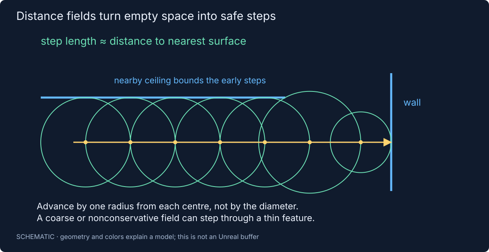
Mesh distance fields preserve local object detail. A global distance field combines scene objects into clipmapped volumes with coarser coverage farther from the camera. A practical query can use detailed object fields near the origin and global fields for longer distances. Transform positions and distances consistently under object scale. Handle the inside/outside sign, two-sided meshes, thin surfaces, grid interpolation, and clipmap transitions. A missing or severely compressed wall in this representation can leak light even when rasterization shows the wall perfectly.
Implement a distance-field step without mixing coordinate systems
Store the field's local bounds, world-to-local transform, voxel dimensions, distance scale/bias, and validity. Transform a world sample into local coordinates, map it into the volume's texel domain, interpolate the encoded value, then decode its distance units. If the object has uniform world scale s, a local distance d becomes sd. For a nonuniform scale, multiplying a positive local distance by the smallest singular value of the local-to-world linear transform gives a conservative lower bound on world distance. Multiplying by the largest axis scale can step through a surface.
t = minimum_trace_distance
while t < maximum_trace_distance and steps < maximum_steps:
x = origin + t * direction
sample = read_valid_distance_field(x)
if sample is unavailable: return unresolved
d = decode_distance_in_world_units(sample)
if d <= surface_tolerance: return candidate_hit(t)
step = conservative_step(d, field_error_bound, footprint)
if step cannot make reliable progress: return unresolved
t += step
return miss_if_coverage_and_distance_are_complete_else_unresolvedAn exact signed distance outside a closed surface supplies a safe step. A filtered, quantized voxel field is approximate: if a proven absolute error bound is ε, max(d−ε,0) is a conservative positive distance bound. Production fields instead use particular expansion, step-factor, minimum-step and tolerance rules. A minimum step can deliberately sacrifice conservatism to escape slow progress; it must not be described as an exact geometric guarantee. A two-sided field for a sheet also does not supply the same inside/outside meaning as a closed solid.
Build the first version with one object, then compare it against triangle intersections for rays near edges and under scaled transforms. Add object bounds to avoid sampling unrelated volumes. A global union field can use the minimum distance of contributing objects, but a finite clipmap covers only a bounded region. Exiting its coverage requires another representation or an explicit unresolved result, not a declaration that the entire world is empty.
A global-field hit supplies a location and an estimated normal; it does not inherently identify a triangle or material. The inspected Lumen path therefore consults a separate page object grid. It offsets the lookup position using the field normal, resolves the global-field page, decodes candidate GPU Scene instance indices, maps each instance to a mesh-card set, and accumulates compatible card samples. That association is a distinct data structure from the distance texture. A field can show an occluding wall while its lighting lookup has no valid mesh-card identity. See the field-hit to card-lookup bridge. The Surface Cache chapter follows the remaining address translation.
Sponza makes this failure mode meaningful: a column, cloth sheet, and thick masonry wall should not be expected to survive a coarse field equally well. The mesh must be split and built so that useful cards and distance fields exist for its geometry. Importing the whole atrium as one enormous mesh can give a recognizable camera image while making secondary tracing and surface coverage poor.
Hardware tracing improves intersections, not every part of lighting
Hardware ray tracing traverses acceleration structures built from supported geometry. Its hit can be more faithful than a distance-field hit, especially for detailed meshes, but the result still needs shading. One mode shades the hit through the Surface Cache. Another evaluates more of the hit material and direct lighting. The first can combine exact triangle visibility with approximate diffuse cached radiance. It is therefore incorrect to equate “hardware ray tracing enabled” with “the path-tracing solution.”
Geometry representation choices remain: Nanite fallback geometry versus supported native tracing, skinned updates, masked opacity, instance transforms, material hit groups, and tracing bounds. Keep intersection quality and shading quality as two independent switches in experiments.
For world-tracing continuation, compaction gives the GPU a dense list of selected unresolved rays. A prefix sum or atomic allocator assigns output slots; indirect dispatch dimensions then depend on the remaining count. This avoids repeating the world trace for already-resolved rays. Other queues use other predicates: the reflection chapter also compacts hits that still need lighting. Empty dispatches, maximum queue capacity, overflow policy, resource transitions, and synchronization are part of a correct implementation. Asynchronous compute can overlap independent tasks; it cannot let a consumer read an unfinished producer.

These are identical 470×500 source-pixel crops starting at (110, 200), at fixed exposure. The second view disables both r.Lumen.ScreenProbeGather.ScreenTraces and r.Lumen.Reflections.ScreenTraces. The third restores those routes and sets the master r.Lumen.HardwareRayTracing=0. The capture record retains the requested and observed settings and the restoration between cases. This example demonstrates sensitivity to the available representation; it does not establish that software tracing must be dark in every scene. To diagnose that difference, inspect the distance-field geometry, card coverage, and returned lighting, rather than increasing exposure.
A diagnostic that separates representations. Hold the Sponza camera fixed and disable screen traces. Differences reveal what the world-space tracing and hit-lighting representation supplied without screen assistance. Then compare software and hardware tracing while keeping hit-lighting mode fixed. Finally change hit lighting while keeping hardware intersections fixed. These are three separate experiments; changing all three together cannot identify the cause of a reflection error.
We now know where a ray goes. The next expense is evaluating what comes back. That is the reason to build the Surface Cache.
Trace state, packed fields, and source details
The tracing implementation reference gives HZB traversal and fallback source locations. The captured distance-field replay decodes one real march, including clipmap/page addressing and stored-format values, before the radiance-cache lookup. These records are from the controlled room and retain that label; they are not relabeled Sponza evidence.
Shade a secondary surface once, then reuse it
Suppose thousands of queries from Sponza's shaded arcade hit the same sunlit wall. Tracing each ray already costs work. Evaluating the wall material and its illumination independently at every hit repeats another large computation. Instead, place a reusable material-and-lighting representation on the wall. A ray hit can then answer “what radiance leaves this part of the wall?” with a lookup.
For a diffuse wall, outgoing radiance is independent of outgoing direction. That is the crucial simplification. We can store one RGB value per surface location rather than a complete function over outgoing directions. A glossy wall does not satisfy this assumption; the cache's effective fully rough response is an approximation whose limitations will matter for reflections.

Choose a surface parameterization
A traditional texture uses authored UVs. Lumen instead builds a set of oriented cards that capture the mesh from useful directions. The offline mesh-card builder samples visible surfaces from axis-oriented views, creates surfels, rejects unsuitable interior samples, clusters coverage into rectangles, and limits the card budget. At runtime, mesh instances transform this representation into the scene. Merged instances and heightfields have additional paths.
Why multiple cards? A single projection of a column cannot represent all of its sides. A projection of the whole atrium hides its arcade interiors behind the outer surfaces. Separate meshes and sufficient card coverage give the cache addressable surfaces where rays actually hit. A magenta region in a coverage visualization is a clue about missing representation, not Monte Carlo variance.
Start a small implementation with one known rectangular wall and one orthographic capture. Store its world-to-card transform, oriented bounds, normal, and texel scale. Once world positions map reliably to capture pixels, add six possible projection directions, coverage selection, and per-mesh card sets. Keep a capture-depth test: the queried point must correspond to the represented surface layer, not another surface that shares the same projected coordinates.
Separate logical surface resolution from physical memory
A distant wall does not need the same cached resolution as a nearby one. Each card therefore needs a logical resolution and page coordinates independent of its current physical atlas placement. A virtual page table maps these coordinates into a finite physical page pool. It also needs enough state to distinguish unmapped, allocated-but-uninitialized, and valid captured data. Sampling stale memory after eviction can look like lighting from an unrelated object.

card_position = world_to_card * hit_position
uv = card_position.xy / card_extent.xy * 0.5 + 0.5
virtual_texel = uv * virtual_resolution
page_xy = floor(virtual_texel / page_payload_size)
within_page = virtual_texel - page_xy * page_payload_size
entry = page_table[card_id, mip, page_xy]
if not entry.resident or not entry.capture_valid: return unsupported
atlas_texel = entry.physical_origin + border + within_page
if not capture_depth_matches_hit(atlas_texel, card_position.z): return unsupported
return sample_final_lighting(atlas_texel, footprint)This is a minimal address contract, not a byte-for-byte transcription of Unreal's packed helpers. The engine also handles card selection, neighboring contributions, mip/border filtering, virtual-to-physical scale/bias, and depth/normal weighting. The captured texel replay exposes those actual mappings and packed values for one recorded query. Keeping this distinction prevents a teaching pseudocode implementation from being mistaken for the engine's exact binary layout.
Page scheduling needs requests, priority, a work budget, and eviction. A useful priority considers projected importance, distance, lighting changes, and age. Updating everything removes temporal staleness but defeats the budget; updating only what was visible last frame fails on newly revealed surfaces. Dirty material, geometry, and lighting changes have different consequences: a changed material can require recapture, while a moving light may require lighting updates on otherwise valid material pages.
To watch this system over time, track three separate objects. The card bounds describe which part of the mesh can be captured; the page mapping describes where a requested resolution resides; the lighting values describe the most recent estimate stored there. Moving the camera need not move a static wall's card, but it can change its requested resolution and residency. Changing the sun need not move the card or reallocate its page, but it changes the lighting that the page should contain. A static rectangle is therefore compatible with an actively updating cache. Conversely, a rectangle moving across the screen may only reflect camera motion.
Watch the representation stay still while its allocation changes

Yellow highlights a representative subset of card bounds.
First follow the outlines around a column and a hanging curtain. Their differently oriented bounds provide different capture domains, even though both are viewed through one camera. Then choose the camera-motion experiment: the outlines move in the image, but the world-space card geometry remains unchanged. The baseline has 386 included, resident cards; the moved view has 395. That is a change in which static representation participates, not a deformation of the atrium.
The fixed-camera sequence provides a second distinction. All 522 valid cards retain the same geometric data across its five observations, while inclusion and referenced low-resolution pages change from 371 cards / 385 pages to 522 / 626. Diagnostic views were rendered between the baseline and light change, so this is an observation of evolving inclusion state, not a controlled proof that dimming the Sun caused allocation. The numerical record keeps the flags and page spans separate from the geometry hash.
All card bounds, page addresses, and hidden outlines
The GPU allocation has room for 585 complete 112-byte card records, but only 522 are valid; its zero-filled tail is not extra geometry. Each valid record retains its world origin, three oriented axes, extents, capture direction, packed visibility/channel flags, resolution biases, and low/high page spans. The page record retains every decoded mapping, physical rectangle, owner, and update index. Retained page payload outside a currently referenced card span is not counted as current residency.
The display uses card-center depth to select readable outlines. A rectangular bound can cross a foreground object even when its center passes that test; it is not a per-edge visibility solution. The separate hidden-card view exposes center-occluded bounds. The light sequence and motion sequence retain all changes. Card indices are stable within each run, but the two runs upload the same geometry in different index orders; an index is not a cross-run identity.

Capture material properties before caching illumination
Render the selected card views into depth and material atlases. These are views of the actual material program, not samples copied from the camera GBuffer. Cache capture resolution, normal maps, alpha masks, texture filtering, and view-dependent material logic can therefore produce different results from the primary view. The capture's effective albedo also folds in a fully rough specular approximation in the inspected implementation. It is not always the original material's diffuse base color.
Store the distinction explicitly: effective albedo is dimensionless; emissive radiance has radiance units; direct and indirect irradiance have irradiance units; final lighting represents diffuse outgoing radiance. The audited combine operation is
LaTeX source
\widetilde L_{\rm card}(y)=L_{e,\rm card}(y)+\frac{\rho_{\rm eff}(y)}{\pi}
\left[\widetilde E_{\rm direct}(y)+\widetilde E_{\rm indirect}(y)\right].A numerical example makes the contract useful. With effective albedo (0.6,0.3,0.1), zero emission, and total irradiance (10,10,10), the outgoing radiance is approximately (1.910,0.955,0.318). A secondary ray returns that colored radiance. The receiver later applies its own material. Multiplying by the wall's albedo again at lookup would darken it twice.
The atlases store pre-exposed values. If the cache scale is , a stored final-lighting texel is . Convert using the cache's scale when moving into scene-linear or view-pre-exposed space. The current view can have a different scale . A raw numeric comparison across these buffers is invalid until that conversion is explicit.
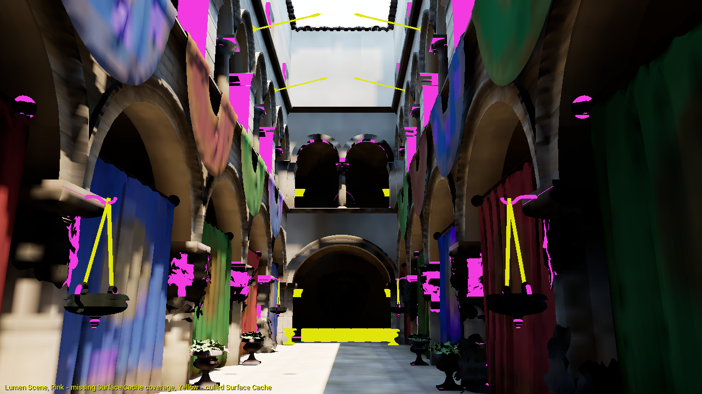
These paired views use the same source rectangle, x=200…999, y=0…679. Follow one stone cornice from the camera image into the coverage image: an accurate triangle hit can still land on a region without a usable cached shading value. Follow the broad cloth instead: coverage exists, but the cached representation has less spatial detail. Those are different errors—availability versus resolution—and need different fixes. Card coverage, scene inclusion, page residency, and texel resolution must therefore be diagnosed separately. A magenta region is a validity warning, not a measured magenta radiance. The full diagnostic preserves the engine's original legend and frame.

Turn one card texel into a numerical lighting calculation
Choose a mapped texel on the narrow stone ledge along the left arcade. This is a declared query over captured card state, selected from the combine pass's tile list. It is a secondary surface approximately four metres above the floor, not a relabeling of primary receiver A. Projecting its reconstructed card position into the hero view gives the marked point below.
Card 107 owns page 323. The page begins at physical atlas coordinate (2176,128) and spans 128 × 128 texels. Tile (13,1) begins at local coordinate (104,8), because a tile is 8 × 8. Taking thread coordinate (4,4) gives local texel (108,12), hence physical texel (2284,140). Sampling its center gives atlas UV ((2284+0.5)/4096,(140+0.5)/4096). Every one of those additions has a purpose: confuse a page-local coordinate with an atlas coordinate and an otherwise valid lighting formula reads another surface.

The stored albedo components are approximately (0.40000,0.37647,0.33725). Decode their square before using the material: effective linear albedo is (0.16000,0.14173,0.11374) for this capture's identity diffuse override. The direct irradiance atlas holds (4288,3296,2496), the indirect irradiance atlas holds (412,568,880), and emission is zero. All three lighting inputs use the cache's exposure scale. The combine therefore predicts, before the store:
LaTeX source
L_{\rm card}^{\rm stored}
=\frac{(0.16000,0.14173,0.11374)}{\pi}
\odot\big[(4288,3296,2496)+(412,568,880)\big]
\approx(239.369,174.321,122.228).The captured R11G11B10 output decodes to (240,174,122). The small change is where storage enters the algorithm: Unreal adds a coordinate/frame-seeded dither scaled by the target format's quantization step, then stores the unsigned floating-point channels. The replay's selected 8 × 8 tile matches all 64 captured output words under its stated store model. It also states the compressed-texture readback approximation used for this test; this agreement is not proof that native BC block bits were recovered.
Cache exposure, bilinear taps, and the complete combine record
The cache uses CachedLightingPreExposure=1/16; the view uses PreExposure=1/2048. They are different scales. A stored final value of (240,174,122) becomes scene-linear (3840,2784,1952) after multiplying by 16, then view-pre-exposed (1.875,1.359375,0.953125) after multiplying by 1/2048. Multiplying the stored texel by the view scale alone loses a factor of 16. The same distinction applies when comparing direct card irradiance with primary-view SceneColor.
The complete query record retains the pass 694 parameter block, card orientation and bounds, page mapping, normalized depth 35404/65535, material/emissive/lighting inputs, four bilinear taps for every sampled atlas, cache/view exposure, frame seed, format quantization steps, and all 64 output comparisons. At this texel-center query the bilinear weights are (1,0,0,0); the neighboring tap values are still retained. At an off-center query all applicable weights would contribute.
The capture exporter expands BC7/BC5 data into floating-point samples, not original compressed blocks. The replay explicitly snaps those samples to a UNORM8 model before its material decode; the raw expanded values remain recorded. This is a modeling approximation. The arithmetic check validates this declared replay against the captured outputs, while native compressed-block equality remains outside its evidence. The source references and every payload hash are in the record.
Illuminate the cards, then let them illuminate each other
Direct card lighting evaluates the lights affecting the represented surface, with its own shadowing path. In this source snapshot, card lighting seeds mask tiles with attenuation, light-function, and cloud-transmittance terms, then resolves required visibility using distance-field or hardware traces; it does not simply sample the primary view's VSM shadow result. It also cannot reuse the camera's final lit pixel: many card texels are off screen, and the receiver normal and material projection may differ. Light lists, shadow masks, card texel positions, and light parameters are therefore part of the cached computation.
For indirect lighting, distribute gather locations over card space, trace their directions, evaluate available scene radiance at hits, integrate irradiance, and reconstruct it across the card texels. These are radiosity probes on cards. They are neither the camera's screen probes nor the separate world-space radiance-cache probes. Their purpose is to update lighting on secondary surfaces.
Place a radiosity probe by choosing a sample in the card's capture domain, decoding its surface depth, and transforming that point back into the scene. This makes the gather follow the represented wall or column rather than a free-standing world grid. Its normal and capture validity determine which surface is being sampled. A card-space grid drawn as a flat rectangle can hide this depth reconstruction; the scene view should place the samples on their reconstructed surfaces. The resulting low-order directional coefficients support a later irradiance reconstruction on that card. They are not the camera pixel's diffuse output, and their four-coefficient, PDF-weighted hemisphere projection has a different normalization from the screen probes' nine-coefficient sphere average.
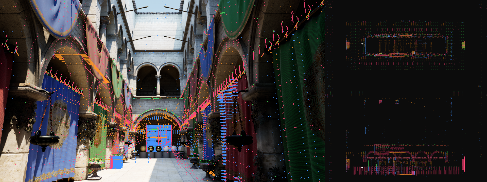
Green up-facing; orange down-facing; blue X-dominant walls; pink Y-dominant walls.
Look underneath an arch: the orange samples follow its underside, while the wall-facing samples trace the vertical stone and cloth. The elevation panel makes that curved surface structure visible without the camera's occlusion. A flat card rectangle would not produce this result. For each mapped page, the reconstruction chooses its jittered card-space probe coordinate, samples the captured depth, and applies the card's oriented transform. The captured normal supplies both the orientation color here and the hemisphere used by the estimator.
There are 94,787 retained depth-valid, initialized samples in the baseline atlas. This is the persistent represented sample set, not the number traced in that one frame. The exact radiosity dispatch tile list was not captured. Advancing the observations changes the page state, jittered locations, coefficients, and history counters; some stored samples persist without being recomputed. The light experiment ends at actual update 63. Before the camera experiment, the original light is restored and warmed. These are separate interventions, not five evenly spaced frames of one continuous light decay.
Project the measured hemisphere without losing its units
A radiosity sample stores four coefficients per color channel: one constant basis function and three first-order directional functions. Let , , be that real SH basis, the cache pre-exposure, and the hemisphere sampling density. The source's coefficient estimator has the form
LaTeX source
c_j^{\rm stored}\approx\frac{1}{N}\sum_{k=1}^{N}
Y_j(\omega_k)\frac{e_c\,\widetilde L_i(\omega_k)}{p_H(\omega_k)},
\qquad p_H=\frac{1}{2\pi}\quad\text{for the uniform-hemisphere permutation}.The PDF correction supplies the hemisphere measure. Do not borrow the extra normalization used by the screen probes' sphere-average representation. Irradiance is reconstructed by a dot product with the cosine-transfer coefficients: band zero receives , and band one receives . The resulting stored irradiance is divided by to recover scene-referred irradiance; a unit-albedo Lambertian outgoing radiance divides once more by . Here , captured from the card-lighting parameter block.
Check the convention with a constant unit incident field over the surface hemisphere. Its irradiance should be , and its unit-albedo diffuse outgoing radiance should be 1. The independent 65,536-direction check reconstructs irradiance 3.14159811; the approximately 0.00017% residual against exact comes from the source's rounded SH basis constants. This validates the normalization convention. It does not prove that low-order SH reproduces every sharp lighting pattern: truncating the directional function remains an approximation.
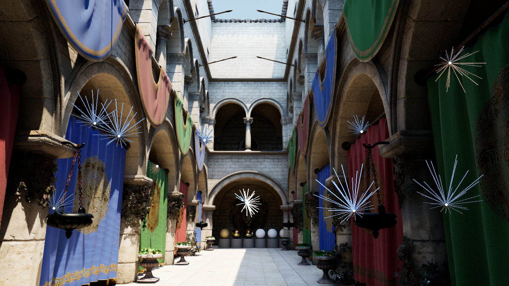
Complete surface arrays and reconstruction limits
The array schema describes the baseline numerical arrays: page/card identity, atlas coordinate, jitter, decoded depth and normal, world position, signed RGB coefficients, accumulation counters, exposure, and derived response. Each observation has its own JSON metadata and NPZ arrays. The readable sample records expose individual examples without loading the entire set.
Normals were read back as expanded BC5 samples, so the original compressed block bits are unavailable. The decoder reconstructs the third normal component and applies the card basis. The plotted points are surface gather locations; normal and ray-direction origin biases are separate shader operations. Filtered trace radiance is captured, but the independent unfiltered per-ray atlas and exact radiosity dispatch list are not. The records preserve those limits rather than filling them with inferred values.
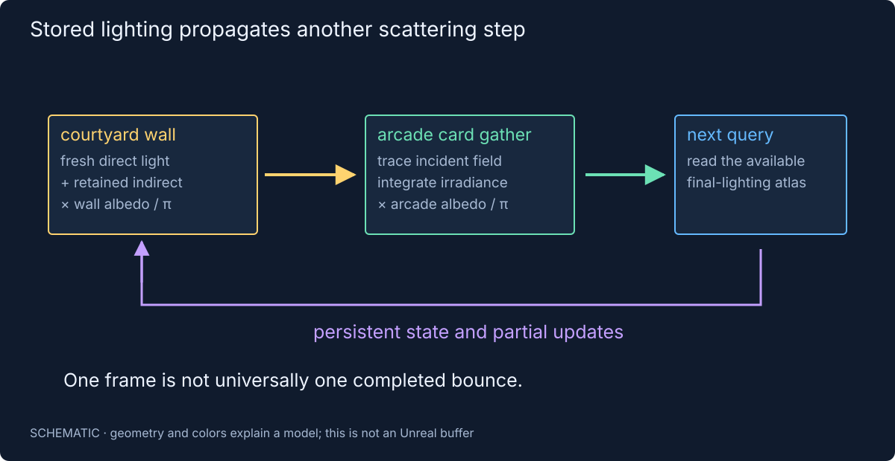
The captured schedule has two lighting combines: direct card lighting, a first combine, radiosity tracing/filtering/integration, and a second combine incorporating the updated indirect result. In the presented renderer invocation these are passes 684, 685, 688–693, and 694. Radiosity can therefore read fresh direct and retained indirect terms from the first combined atlas; later view queries can read the second combined result. Updates are not uniformly a frozen previous-frame image. If selects the pages updated now, a useful simplified recurrence is
LaTeX source
\ell_{t+1}=(I-Q_t)\ell_t+Q_t\big[b_t+K_h\ell_{\rm available}\big].The first term retains unselected data. The second computes selected data using represented sources and transport. Separate direct/indirect budgets, histories, filtering, and intermediate combines make the actual schedule more detailed. The equation explains why moving a light can propagate through the cache gradually even when the primary direct shadow responds immediately.
Experiment. Change the color or intensity of a courtyard light while the camera stays in the arcade. Capture both final lighting and card-lighting views over successive updates. The direct receiver response, the secondary wall response, and the reconstructed arcade response need not change at the same time. Record frame numbers and update settings; an unlabelled pair of screenshots cannot distinguish delayed updates from a permanently different solution.
Complete card and lighting records
The reference separates offline card construction, page allocation and address transforms, material capture, direct-light lists and shadows, and radiosity sampling and filtering. The frame explorer provides resource versions, formats, dimensions, packed fields, pass parameters, and available binary payloads. Its captured scene is explicitly the room reference; Sponza observations are attached to the Sponza manifest.
Share the incoming light field near the visible receiver
The Surface Cache made a secondary hit cheaper. We still cannot afford a large hemisphere of rays at every pixel. Look again at the arcade floor: neighboring pixels on the same smooth patch see similar incident light. Instead of tracing a full directional distribution at each pixel, trace at a sparse set of representative surface positions and reconstruct the answer for nearby pixels.
A screen probe is one such surface sample together with a directional representation of incoming radiance. “Screen” describes how we choose the sample, not a volume floating at a constant camera depth. Its origin comes from a surface position reconstructed using depth. The probe's normal, depth, material-related sampling information, and identity are essential state.

Place probes before tracing rays
A minimal implementation chooses one depth sample per regular screen tile. That works for a flat floor and fails at silhouettes: a column may occupy only a few pixels and receive no representative. Add adaptive probes for uncovered depth/normal configurations. Budget and bound the adaptive count, assign stable indices, and write a map from pixels or tiles to candidate probe identities. The interpolation stage will need that map; allocation order alone is not a spatial relationship.
Invalid depth, sky pixels, backface-supported materials, thin geometry, and normal discontinuities require deliberate rules. A probe origin displaced too far from the surface can cross a wall. Too little offset can self-intersect. Jitter changes the sample pattern over time and must be recorded alongside temporal reprojection. The exact spacing and directional resolution are quality-dependent settings, not universal properties of “a Lumen probe.”
Imagine sliding the camera sideways while keeping one screen tile highlighted. Its depth sample can move along the floor, cross a column silhouette, and then land on the far wall. The tile index has stayed the same while the represented surface has changed. This is why a temporal probe display must show world positions or geometric correspondence as well as atlas indices. Reusing coefficients solely because the integer index matches would carry one surface's illumination onto another. Adaptive probes add a second source of change: their count and compacted order follow current demand, so an adaptive index is not a permanent scene landmark.
Watch the samples attach to actual Sponza surfaces

Cyan: uniform probes. Orange with white rings: adaptive probes. Stale atlas entries are excluded.
Selected observation, allocation counts, and complete probe data
Even with a stationary camera, “the probe at this screen coordinate” is not a permanent sample of one world point. In the light-step sequence, the uniform tile jitter changes from (4,4) to (6,12), then later to (2,8) and (12,6) pixels. The baseline has 3,569 valid uniform probes and 137 active adaptive probes: 3,706 active samples in total. Its atlas also contains 103 finite adaptive entries outside the active allocation. Drawing those entries would turn old storage into fictitious current probes. The placement view therefore follows the allocation bound and the stored depth validity, while retaining the excluded entries in its numerical record.
Follow a row of cyan points across the floor and then the orange samples near a depth edge. The regular screen spacing becomes uneven in world space because each point is lifted through a different depth. The adaptive samples add measurements where one tile is insufficient. Step through the light change: changes in their positions are sampling changes, while changes in their stored directional field are lighting-estimate changes. To compare illumination at one physical location, use the world-position and normal checks in the SH example below; matching atlas indices alone cannot establish that correspondence.
Build the first working placement and gather pipeline
Use separate records for the receiver and the traced directions. A minimal receiver record contains world position, geometric/shading normal as required, device or linear depth with a declared convention, screen coordinate, and validity. A ray record contains its owning probe, directional cell, refinement level, direction, trace interval, and result state. An atlas coordinate is not a replacement for the owner identity: compaction changes queue order.
// Teaching implementation: five dispatches with explicit dependencies.
PlaceUniform:
for each screen tile:
choose a valid depth sample using the frame's declared jitter
reconstruct world position with this view's inverse projection
write UniformProbe[tile] and its geometry
FindUnrepresented:
for each valid pixel:
test the uniform probe against this pixel's depth and normal
if incompatible: mark a demand in an adaptive allocation cell
AllocateAdaptive:
prefix-sum unique demands; cap at the allocated capacity
write AdaptiveProbe[base + offset] and pixel/cell-to-probe indirection
record overflow explicitly; never write beyond the probe array
GenerateDirections:
for each valid uniform or adaptive probe:
generate the directional cell/refinement records
write owner indices before any later queue compaction
TraceAndReconstruct:
trace the screen route; compact unresolved records
trace the selected world route; fill each original result slot
reconstruct directional cells; integrate and interpolate to pixelsA prefix sum is a parallel version of assigning consecutive indices to marked items. If demand flags are [1,0,1,1], an exclusive prefix sum is [0,1,1,2]; the marked items write to indices 0,1,2 and the total count is 3. For several demands in the same allocation cell, deduplicate or use one atomic claim before scanning. Otherwise repeated pixels spend the entire adaptive budget on the same surface.
On the GPU, put the count and capacity in different fields. The count determines active work; capacity determines legal addresses. A subsequent indirect dispatch uses the compacted count, rounded up to the thread-group size, while every shader guards its final partial group. The render graph must order producer writes before consumers and declare the access transition. A CPU readback of the count between every stage would serialize the frame and erase much of the benefit.
The captured Sponza frame gives this distinction a concrete failure case. Its placement allocation has 3,600 uniform slots and capacity for 1,800 adaptive probes. The captured adaptive allocator says 117, supported by 117 nonzero entries in the tile header. Of the uniform slots, 3,569 have finite positive geometry, giving 3,686 active placements with usable geometry. Scanning the entire storage for positive values would instead find 3,809: 123 additional adaptive entries contain old values beyond the active allocation. Drawing those stale entries as current probes would make the visualization wrong even though every plotted coordinate was read from a real buffer. The placement record retains both the active subset and the excluded storage, with the allocator/header evidence and its readback limitations.
The production implementation has additional classification, allocation, and packed representations. The essential invariant survives all of them: every returned direction must remain associated with the receiver and directional measure that generated it. This is why a probe visualization needs the placement map, adaptive count, ray index mapping, and validity data alongside the colorful radiance atlas.
Store directions on a sphere, not just an RGB average
Suppose the courtyard is bright to the right and the covered arcade is dark to the left. Two surfaces at the same position but with different normals receive different irradiance. A single average color cannot capture that. Store radiance as a function of direction, then integrate it against the receiving material.
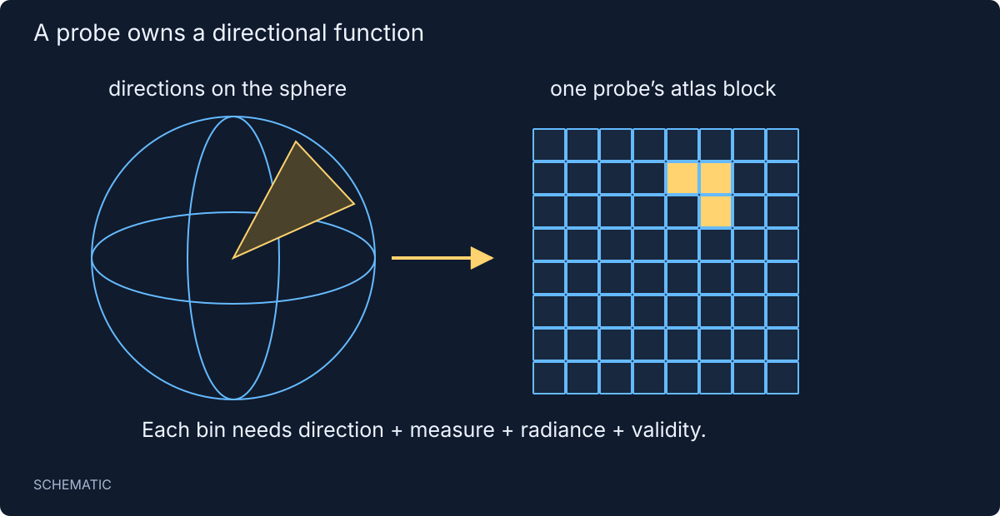
The inspected implementation uses equal-area spherical mapping for relevant directional probes. Do not substitute the common two-channel octahedral normal mapping and assume equal solid angles. The mapping function, resolution, bin centers, randomized offsets, and Jacobian determine how a texel corresponds to a direction and measure. A visualization should show that mapping beside the radiance, because a bright atlas texel is meaningless without its represented direction.
In the simplest implementation, trace one jittered direction in each equal-area bin. For M bins covering the sphere, each bin has solid angle . Sum radiance times the positive receiver cosine and this measure to estimate irradiance. If directions instead come from a probability distribution, use their inverse-PDF weights. A deterministic quadrature weight and a stochastic PDF are related tools, but not interchangeable labels.
Spend directions where the material and illumination need them
A diffuse receiver prefers directions with large cosine. A glossy receiver prefers directions near its reflection lobe. The last frame's lighting also predicts where bright incoming directions may lie. Lumen's probe tracing can use BRDF and lighting information to guide its directional work. This requires both a distribution and a reproducible mapping from sample indices to generated directions.
To implement a first importance sampler, build nonnegative bin weights , add a small support floor, normalize to , select a bin through a cumulative distribution or hierarchical reduction, then sample within it. If its solid angle is and sampling within the bin is uniform, the directional PDF is . The generated sample must retain enough information to reconstruct that PDF or its encoded reciprocal weight.
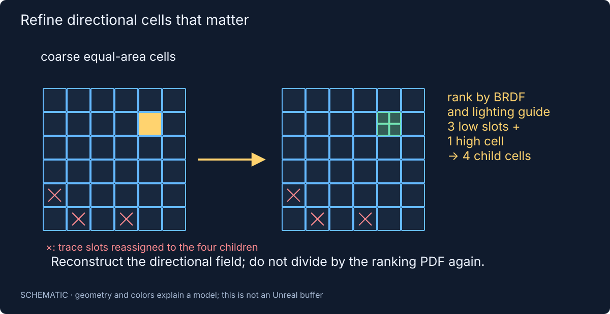
At a shared probe, multiple nearby materials may request different distributions. Building the guide from represented BRDF information is an approximation to their combined demand. Quantization, limited directional bins, support floors, maximum ray weights, and radiance clamps can change the estimator. Do not describe every production probe path as an unbiased ordinary camera-path sample merely because it contains a PDF.
The actual Lumen implementation is a structured refinement scheme. Its normalized incoming-light PDF and BRDF PDF form a sort key. Low-priority ray slots can be reassigned in groups of three to subdivide a higher-priority spherical cell into four children. The default production path uses one refinement level; the serial reference path supports multiple levels. The packed ray information retains that cell and refinement level. The traced results are subsequently reconstructed into the regular directional representation before filtering and integration. The PDF used to rank cells is not a new throughput divisor to apply to that reconstructed radiance. Adding an extra division by it would change the answer. See ray ranking and subdivision and integration of the reconstructed directional field.
Now trace the generated directions through the screen/world hierarchy. An accepted screen hit uses its valid screen-lighting source. A world hit queries the represented surface lighting or selected hit-lighting path. A miss may query the sky. Store the result, hit distance or depth, validity, and any additional flags needed by later filtering. Record whether the stored value is raw radiance, weighted radiance, or a packed trace result. The integration formula must match that storage contract.
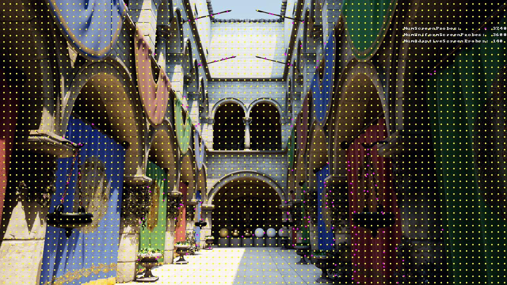


Both panels magnify the same region: x = 200…699, y = 240…659 in the 1280×720 hero image. The placement capture reports 3,600 uniform slots and 140 adaptive probes, giving 3,740 total slots. Those are this diagnostic frame's allocation counts, not a count of valid hits or a guarantee that the later diagnostic frame uses the same adaptive set.
The engine enables this view through r.Lumen.ScreenProbeGather.Debug as well as the placement selector. That distinction matters when validating an implementation: a correctly set selector is not proof that its debug pass ran. The recorded normal mode is a separate render invocation. Follow the native resource identities below when tracing one specific probe; do not match two arbitrary yellow dots across diagnostic frames and assume they represent the same sample.
Open the directional record of a floor probe
In the frozen frame, the uniform probe near A is index 3391, at atlas coordinate (31,42). Its captured world position projects to approximately (498.5,680.5), a little left of receiver A at (500,680). Its normal is approximately (0.01253,0.05431,0.99845). That distinction matters: this is a nearby measurement available to reconstruction, not proof that A uses this probe with weight one.

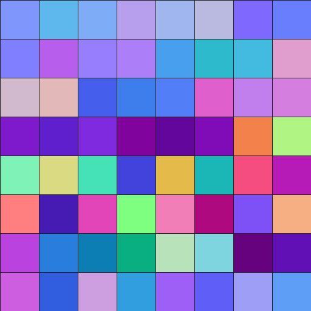
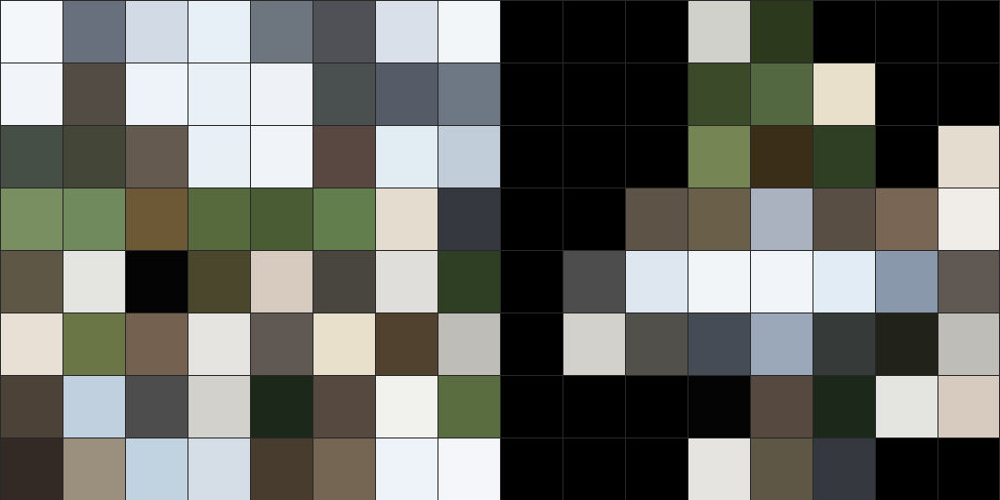
For a concrete address, trace slot (0,0) belongs to trace-buffer coordinate (248,336). Its packed ray-info word is 0x0207. The decoded angular cell is (7,8), at refinement level 0 of the 16-cell-resolution representation. Using the recorded blue-noise components gives UV approximately (0.49828,0.56054), then direction (−0.00759,0.17524,0.98450): mostly upward toward the opening. The recorded trace radiance is (9.875,12.625,19.5) in view-pre-exposed RGB. This sky-facing sample is strongly blue compared with many directions toward stone.
The first trace slot and the first filtered-field texel are different questions. Copying a coordinate between those layouts can pair a bright sky trace with a zero texel representing another direction. That does not demonstrate that filtering discarded the sky. Decode the ray's cell and refinement level, perform the structured-to-regular reconstruction, and only then follow the field through spatial filtering and irradiance conversion.
Every available field for the three selected probes
The records for probe A, probe B, and probe C retain all 64 trace slots each: packed ray-info words, cell/level, jitter samples, reconstructed directions and cone widths, trace radiance, stored hit words and flags, recorded hit distances where valid, projected hit checks, and the separately addressed regular radiance values. They also retain all nine SH coefficients for each RGB channel, probe positions/normals, view transforms, resource versions, byte offsets, and payload hashes.
The nearby uniform indices are 3391,3405,2919, projecting to (498.5,680.5), (722.5,680.5), and (626.5,584.5). Their trace records have 27,20,46 hit flags respectively. A missing hit flag is not zero incoming light: a remaining direction can still obtain sky or cached far-field radiance. Conversely, a geometrically valid hit can return very little radiance. The placement inventory separates captured allocation/validity evidence from unused storage, and the figure manifest records display transforms and native numerical arrays.
Read one probe, not an atlas as wallpaper. Select a probe on the arcade floor. Locate the atlas block assigned to it. Identify the bins looking into the courtyard and those looking at the nearby wall. Compare their radiance and hit-distance values, then inspect the trace or fallback that supplied each. Finally rotate the receiving normal in the integration diagram. The same directional data should produce a different cosine-weighted result without requiring a different stored incoming field.
Long traces still repeat work. Many nearby probes look through the same opening toward distant geometry or sky. That observation motivates one more cache, in world space, with a different purpose from the Surface Cache.
Cache distant incoming light in world space
A world-space radiance probe stores a directional incoming field at a point in space. It answers a different question from a card texel: the card stores a surface's approximate outgoing radiance, while the world probe describes what arrives from each direction at a spatial location. Screen probes sample the visible receivers. World probes can share far-field information between those receivers and across camera movement.
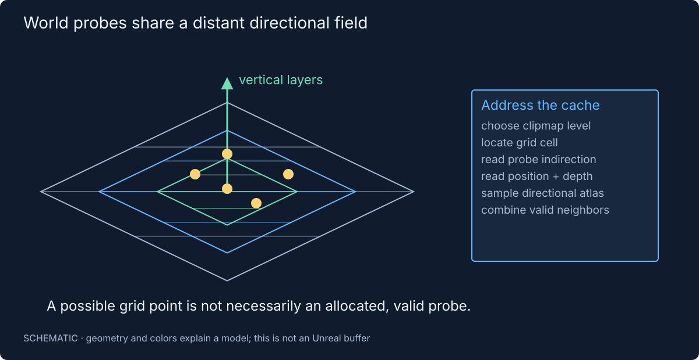
Allocate where queries actually need the field
A dense fine grid over the entire world is too expensive. Clipmaps provide a fine region near the view and progressively coarser coverage farther away. Demand marks identify cells needed by current gathers. An indirection texture or buffer maps those cells to physical probe indices. Allocation tracks free entries, last use, update priority, and validity. Scrolling a clipmap changes the relationship between logical cells and world positions, so stale entries cannot simply remain valid under their old coordinates.
Screen-probe placement and cache demand therefore precede the relevant cache update, even though we introduce the cache after explaining a screen probe's query. The implementation schedule is a dependency graph: place receivers, mark demanded world cells, allocate/update selected world probes, then consume the available cache in the remaining traces. Other consumers and retained data can have their own update paths.
For each selected world probe, trace a directional distribution and store radiance plus geometric information needed for parallax and visibility handling. Construct the configured filtered representation and borders so directional lookups remain coherent across seams. The inspected default radiance-cache mip count is one; additional mips are a configurable extension, not an assumed default. An atlas slot with radiance but no valid depth or position record is insufficient for a reliable spatial reconstruction.
Now move the camera a short distance. A world probe can remain at the same world location even though its projected position changes. For a larger move, a clipmap scroll brings new cells into range; a physical atlas slot may eventually be reassigned to one of them. Follow the pair world cell and allocation identity, not just the physical index. For a fixed-camera light change, the opposite experiment is useful: the spatial grid can stay fixed while stored directional radiance changes. Placement, allocation, selection for update, and stored illumination are four distinct observations. A placement overlay alone measures only the first of them.

Fixed markers show positions; the trace-age histogram shows update activity.
Unlike the surface samples above, these locations form a grid through space. Reconstruct a center as clipmap corner plus times cell spacing, add the captured probe offset, then undo the view's translated-world origin. Here the offsets are zero, and the active cells occupy the finest clipmap with approximately 104.17 cm spacing. Screen-space spacing varies with perspective; this is still a regular world-space grid.
With the camera fixed, 878 world cells remain active through the light step. Their positions alone say little about whether their lighting is fresh. The age chart therefore counts the active probes by their recorded time since the last trace. Its scale remains 0–1000 probes across observations. In the baseline, 150 probes have age 1, another 150 age 2, and another 150 age 3; the rest retain older traces. Updating a budgeted subset can change this distribution while leaving the placement image almost unchanged.
Now select camera motion. The active count goes from 878 to 968 after the first recorded update, then to 847 at update 63. The first transition retains 870 world cells in the same physical slots, even though their logical clipmap coordinates change. Four reused slots acquire different world cells. This is why matching a raw texture coordinate or physical index across frames is insufficient: track the clipmap level and world cell as the spatial identity, and track the storage slot independently. The later transition removes old demand as the cache settles around the new view.
All grid positions, hidden probes, and temporal correspondence
The motion ledger records unchanged cells, changed logical coordinates, recycled physical slots, additions, removals, last-use and last-trace timestamps. The baseline record retains every active probe's address and position, plus allocator/free-list checks. Its 925 allocated high-water slots minus 47 free slots equal the 878 active references. The separate hidden-probe projection reveals cells behind primary geometry without mixing them into the visible marker plot.

These are the screen-probe gather's main radiance-cache cells: four 48³ clipmaps, identified through matching mark/allocate parameters and resource-consumer bindings. The separate translucency cache uses three 24³ clipmaps in this capture. Combining a transform from one renderer invocation with resources from another, or selecting the translucency cache by a similar resource name, produces a plausible but incorrect visualization. The source records identify the selected invocation and every consumed version. The main cache's directional content is stored in its octahedral atlas; these position markers do not imply that it uses the screen probes' SH layout.
Implement a small world-probe allocator before adding clipmaps
Start with one bounded 3D grid and a physical pool of P probe slots. Store an indirection index per grid cell, initialized to an invalid sentinel. Store world position, allocation generation, last-used update, last-lit update, and validity per physical slot. The directional radiance and depth atlases use that physical index. The generation prevents a delayed request from mistaking a recycled slot for its previous owner.
A demand pass marks cells touched by queries. A compacted demand list allocates missing slots from a free list. A separate update list selects at most B probes according to a deterministic priority. Clear or initialize every newly assigned slot before any interpolation can consume it. After tracing and filtering, publish its valid state. Retire unused slots only after their current readers have finished; temporal GPU resources cannot be recycled just because CPU code moved to the next line.
For cell size h and grid origin o, a position x has grid coordinate q = (x−o)/h. The integer part identifies neighboring cells; the fractional part supplies interpolation coordinates. A corner with bits (bₓ,bᵧ,b_z) has spatial weight equal to the product of fᵢ for bit 1 and (1−fᵢ) for bit 0. All eight weights sum to one. Missing corners and geometric rejection change that sum, so track the accepted weight explicitly. This elementary implementation is useful for validating addresses and constants; it is not yet sufficient near Sponza's walls.
Add camera-centred clipmaps only after the single grid works. When a grid scrolls, distinguish cells that retain the same world location from new entering cells. Wrapped storage indices alone cannot establish that identity. Allocate, invalidate, and update against world cell coordinates or an equivalent tagged mapping. The engine's concrete indirection layout and budgeting policy refine this same ownership problem.
Why ordinary trilinear interpolation leaks through walls
Take two probes on opposite sides of an arcade wall. Their positions are close, but their incoming fields are different. A distance-only interpolation gives the dark side some of the bright side's field. The weights can sum to one and still be wrong: normalization preserves constants, not discontinuities.
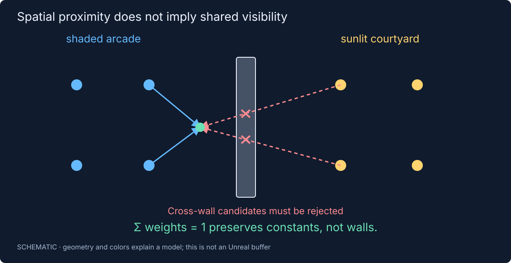
A teaching reconstruction starts with , with normalized valid weights. The direction may be corrected for the difference between the query point and the probe's observed hit. A depth estimate helps decide whether that correction is plausible and whether the query lies in front of or behind a represented occluder. The actual implementation has specific clipmap selection, coverage tests, fade distances, interpolation weights, and directional/depth sampling rules; substituting a generic eight-probe average loses those conditions.
Local geometry must still be resolved before relying on a distant cache answer. A near wall should occlude far radiance. The trace/cache transition distance and cone footprint determine when a cache approximation is useful. Querying the cache from the origin without local visibility would illuminate the arcade through its own wall.
coverage = choose_cache_clipmap_and_coverage(query_position, ray_cone)
if not coverage.valid: continue_world_trace_or_return_explicit_failure
neighbors = read_probe_indirection(coverage.cell_corners)
for probe in valid(neighbors):
geometry = read_probe_position_and_directional_depth(probe)
direction = parallax_correct(query_position, ray_direction, geometry)
weight = spatial_weight * validity_and_visibility_weight
value += weight * sample_probe_radiance(probe, direction, mip)
total_weight += weight
if total_weight == 0: use_documented_fallback
else: value /= total_weightThis pseudocode exposes the required decisions without claiming that every weight is literally multiplied in this order in Unreal. A failed coverage lookup, an unallocated indirection entry, a valid zero-radiance probe, and a rejected geometric contribution are four distinct states. Log them separately. Otherwise a black output cannot tell you which part of the cache failed.
Evaluate one actual eight-probe neighborhood
The captured world-cache pass contains 104,483 compacted trace entries. Select lane 11 by the declared selection rule in the query record. Its packed word identifies uniform screen probe 695 and trace cell (1,4), stored at trace-buffer coordinate (441,68). The probe lies near screen (882,136). Its reconstructed translated-world query position is (499.349,144.104,251.590) cm, and its sampled world direction is approximately (0.916132,−0.394151,0.073122).
This query falls inside clipmap 0, whose cell size is 104.1667 cm. Subtract its translated-world corner, divide by cell size, and subtract the half-cell offset used for probe centers. The base interpolation cell is (29,25,27), with fractions (0.633747,0.383396,0.279266). Read the eight integer entries of the 192 × 48 × 48 indirection volume; they map these logical neighbors to physical probe indices 38,715,42,719,39,716,45,720. A screen probe index, a clipmap cell coordinate, and a physical world-probe index are three different address spaces.
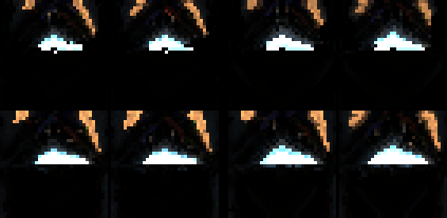
The trilinear weights, in the record's neighbor order, are approximately (0.162765,0.063068,0.101205,0.039215,0.281642,0.109129,0.175121,0.067855); they sum to 1. Spatial weighting alone is insufficient. Each probe uses its captured position and directional depth to reproject the query direction onto the probe's assumed bounding sphere. That changes the directional atlas coordinates and introduces the solid-angle correction. Read all four bilinear taps at those coordinates, decode their R11G11B10 values, undo the cached exposure by multiplying by 16, and apply the recorded parallax factor before the spatial interpolation.
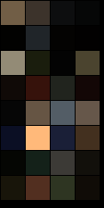
The replay returns approximately (457.921,406.295,344.265) in scene-linear RGB after undoing cached exposure. Multiplying by the current view's 1/2048 gives (0.223594,0.198386,0.168098), close to the captured TraceRadiance value (0.224609,0.199219,0.167969). The replayed depth is 1039.793091 cm versus the captured 1039.792969 cm. These are forward consistency checks for the cache lookup. They do not claim an exact reconstruction of preceding tracing, sky-leak additions, fog, or the final quantized store.
Validity and addressing details for the world-cache query
All eight indirection entries are allocated and distinct. The captured probe-offset buffer is zero, so probe positions are clipmap corner + (cell + 1/2) × cell size. Each physical probe index maps to tile (index & 127, index >> 7) in the 4352² radiance atlas. The final tile resolution is 34, including the border; the depth atlas is 4096². The query uses mip 0 and a cone half-angle of about 0.17708 radians. The record retains the packed ray info, blue-noise sample, ray-generation parameters, 32 radiance taps, depth samples, parallax corrections, and nested interpolation order.
The selected lane is a declared CPU replay over captured inputs, not a recovered shader-local execution log. The indirect argument buffer contains two dispatch-width alternatives; the lane lies below both limits, but the dump does not prove which alternative was dispatched. The captured view reports no global-SDF clipmaps for this stage. We therefore describe the world-cache lookup and its consistency with the stored result, rather than claiming to have reconstructed an unavailable voxel-tracing history.
Actual lookup arithmetic and all available resource fields
The world-cache replay follows a dispatched ray through clipmap selection, eight indirection entries, probe position, depth samples, atlas coordinates, exposure, and interpolation. The associated explorer links identify the exact resource version and pass that supplied each value. The source reference records allocation, updates, filtering, and cache coverage. These are the details to inspect when a diagram's abstract “probe” becomes an actual addressable GPU record.
Reconstruct a stable answer without changing its units
We have sparse and noisy measurements, distributed over surface positions, directions, and time. The remaining task is not “blur the image until it looks good.” It is to reconstruct an incoming field at each visible receiver, integrate it against that receiver's scattering response, and reuse only history that still describes the same surface and illumination.

Integrate the directional field
A diffuse surface needs irradiance . This is a convolution with a broad cosine kernel, so it discards much of the high-frequency directional detail needed by a mirror. That observation makes low-order directional bases useful for diffuse lighting.
Spherical harmonics (SH) are an orthonormal basis of functions on the sphere, analogous to Fourier modes on a circle. A coefficient is an integral of the function times one basis function. The constant basis term carries the mean, with the normalization made explicit below; higher bands record increasingly fine directional variation. Three bands contain nine coefficients. Cosine convolution multiplies the first three bands by , , and . Truncating there is an approximation, particularly for sharp occlusion and narrow light sources.
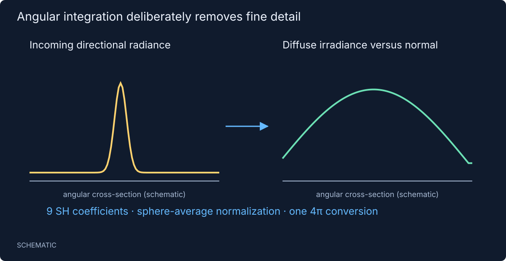
Normalization must match the stored representation. In the inspected screen-probe filtering path, the stored radiance SH is formed as an average over the equal-area sphere samples:
LaTeX source
s_{lm}\approx\frac1M\sum_{j=1}^{M}L_jY_{lm}(\omega_j),\qquad
E(n)\approx4\pi\sum_{l=0}^{2}\sum_{m=-l}^{l}A_l s_{lm}Y_{lm}(n).The factor 4π converts a sphere average into an integral. It must appear exactly once. The default irradiance storage path preintegrates the result into a 6×6 equal-area directional probe with a border (the engine names this format OCT); the SH3 storage path retains the coefficients and applies the factor at consumption. SH3 can be selected explicitly and is also forced when the configured short-range bent-normal AO path applies during integration. The card-radiosity SH path uses a different, PDF-weighted hemisphere projection with four coefficients. Its measure is different, so it must not inherit the screen-probe factor blindly.
A normalization test. For constant radiance L₀, only the constant SH coefficient is nonzero in the exact projection. Since , the stored average coefficient is . Substitution gives , exactly the hemisphere integral. Omitting 4π gives L₀/4 instead. This is a deterministic scale error, not noise.
Give those numbers a shape. At a captured probe position, evaluate the reconstructed unit-albedo diffuse response for many hypothetical receiver normals. Draw each normal as a direction from the probe and use the response magnitude as the distance along it. The resulting lobe is a graph of a function, placed in the scene where that function was measured. It is not a solid object, a traced ray bundle, or a volume occupied by light. A long upward lobe means a surface with an upward normal would receive more reconstructed diffuse illumination there. Its orientation can be compared with Sponza's opening; its value at the actual receiver normal can be compared with the integrated buffer.
For a temporal comparison, retain the same units, angular basis, exposure conversion, radius scale, and color mapping. Rescaling each lobe to its own maximum would make a fourfold drop in illumination disappear from the picture. Low-order reconstruction can also produce negative lobes near sharp changes. If the display clips them to zero, keep the signed coefficients and report that clipping; the display is not the stored representation. A changing lobe at a fixed position describes a changing estimated field. A lobe that jumps to another surface after camera motion instead needs a new geometric correspondence before its coefficients can be compared.
Turn the captured directional field into a shape in the scene

Blue through white indicates increasing response. Magenta outlines expose depth-occluded parts of the function graph. Green and pink center marks identify floor and arcade samples.
Selected observation, SH units, display scale, and geometric matching
Focused positions, signed coefficients, and temporal matches
These lobes use captured coefficients and the captured camera transform; their mesh and colors are a CPU visualization of the reconstructed function. They evaluate the no-occlusion, unit-albedo response. They do not add a material, apply a receiver's base color, or depict individual rays. Use the placement view to locate a sample, then use its lobe to ask which receiver orientations would receive the strongest reconstructed illumination there.
The light-step example also shows why temporal matching needs geometry. The focused left-arcade sample labelled arcade-left-8 has nearest matches within 5.35 cm and normal dot products above 0.999 across these five observations. Several floor matches move roughly half a metre because a small screen-space jitter produces a large world-space displacement at a grazing view angle; the data flags these as incompatible under its stated matching rule. A jump in such a lobe is not clean evidence of a lighting change at a fixed physical point. The complete records retain the actual positions, normals, matching distances, and all 27 signed coefficient values, rather than silently treating the atlas slot as an enduring identity.
Separate normalization error from quadrature error. The decoder evaluates the constant-field test above with the analytic constant coefficient and obtains D=1 within 1.5×10−6 over 256 test normals. Projecting that same synthetic constant field through the actual 8×8 direction layout leaves small higher-band residuals; the worst deviation becomes about 2.05%. The first test checks the factor 4π and the Lambert factor. The second exposes the finite directional quadrature. Both are decoder tests with a declared synthetic input, not claims that the captured atrium has constant illumination.
The screen-probe diffuse output is the unit-albedo diffuse response, , multiplied by the view pre-exposure. Composition later multiplies D by the visible receiver's diffuse color. The receiver albedo and 1/π must each be applied exactly once. By contrast, the Surface Cache's final-lighting combine has already multiplied secondary direct-plus-indirect irradiance by the secondary surface's effective albedo/π and added emission. Its separate direct and indirect irradiance atlases remain unweighted by that albedo. Those two material interactions belong to different path vertices.
Interpolate only between compatible surfaces
Choose nearby probe candidates through the screen/adaptive-probe maps. Compute geometric weights using position, depth, and normal compatibility. Normalize accepted weights. If all candidates are rejected, use an explicit fallback rather than dividing by a tiny denominator and amplifying noise. A screen-space neighbor across a silhouette can be metres away in world space; pixel distance alone is not a transport relationship.
Spatial filtering of probe radiance also needs geometric checks. A ray hit distance helps distinguish an observed nearby wall from distant illumination. Position and angular thresholds limit mixing between incompatible observations. Several small filter passes can be cheaper than one large kernel, but their combined footprint still smooths the field. The output should be inspected at contacts and thin columns, not only on a large flat floor.
Check the normalization against captured probe coefficients
Evaluate probe A's captured nine-coefficient RGB SH representation at its own normal, using the declared no-occlusion test AO=1. Applying the sphere-average normalization and the unit-albedo Lambert factor predicts D ≈ (1.26287,1.67993,2.57980). The probe projects to the center of pixel (498,680), whose captured integrated field is (1.203125,1.5625,2.375). Relative to that stored field, the differences are approximately 5.0%,7.5%,8.6%. This is a useful scale check: omitting 4π would produce a much larger systematic error. It is not an exact replay of per-pixel integration, which also selects/interpolates nearby probes and applies the active geometric and occlusion rules.
At receiver A itself, the current integrated output is (1.28125,1.703125,2.5625). It differs from the value at the probe center because these are different pixel addresses. At B it is (1.046875,1.46875,2.3125). These blue-weighted responses explain why shaded stone retains light even where the analytic sun's mask is zero. The visible stone's diffuse color still has to multiply this unit-albedo response.


Current, imported, and newly written diffuse history
| Receiver | Current integration | Imported history at the pixel | New history output |
|---|---|---|---|
| A | (1.28125,1.703125,2.5625) | (1.296875,1.671875,2.5) | (1.296875,1.671875,2.5) |
| B | (1.046875,1.46875,2.3125) | (0.984375,1.40625,2.1875) | (0.984375,1.40625,2.1875) |
| C | (0.515625,0.5546875,0.71875) | (0.609375,0.625,0.765625) | (0.6015625,0.6171875,0.75) |
All entries are view-pre-exposed RGB before receiver diffuse color. The full integration/history record identifies the distinct resource versions; the new history is written by temporal reprojection at pass 762. These three receivers have packed history byte 0x0f: the high nibble encodes zero fast-update amount, and the low nibble 15 means the configured maximum accumulated history. The captured parameter MaxFramesAccumulated is 10, so this byte represents ten effective accumulated frames, not fifteen. Equality of old and new rounded values at A/B does not prove a zero blend weight. C demonstrates a stored update toward the new measurement.
The dump does not export the per-pixel interpolation weights, reprojected tap weights, disocclusion decisions, or final blend factor as separate resources. The current and historical samples above therefore establish their stored inputs and output, not an inferred exact sequence of shader-local choices. A nonzero unit-albedo diffuse value at the metallic receiver C also does not imply a nonzero diffuse contribution after composition; the material's diffuse color controls that ownership.
History is a previous measurement, not free ground truth
For a moving camera, the previous value at the same screen coordinate usually belongs to another world point. Reproject the current receiver into the previous frame using transforms and motion. Gather neighboring history taps, then validate each tap against depth, normal, material classification, and availability. Exclude invalid taps and renormalize. Occlusion changes create disocclusions: a newly visible surface has no valid previous observation, even when a nearby color looks plausible.

For valid history, a simplified blend is . A running-average weight reduces the influence of each new noisy estimate as N grows. Capping N bounds the latency. Fast-update flags, neighborhood clamps, invalid-current-sample handling, and rejection can alter this rule in the actual shader. The final per-pixel temporal accumulation follows integration; there are also separate histories used earlier for probe radiance and sampling guidance. They are not one interchangeable “temporal buffer.”
If history stores view-pre-exposed lighting, it also needs the ratio of current and previous pre-exposure. Reprojection can identify the correct point yet still produce a brightness jump if the exposure conversion is missing. Camera cuts, resolution changes, incompatible view rectangles, and changes to the representation require history invalidation or a defined resampling path.
The latency tradeoff in numbers. After a step from old value 0 to a constant new value 1, an exponential blend with a=0.1 gives 0.1, 0.19, 0.271, and after ten updates about 0.651. Stable accumulation intentionally remembers the old value. A still screenshot cannot reveal that delay. A camera-motion sequence and a light-change sequence test different causes of history failure.
Short-range occlusion supplies local geometric detail that sparse probes can miss. Ambient occlusion or a bent normal can modify the diffuse and specular reconstruction, but these are additional approximations with explicit ownership. Multiplying every lighting term by an arbitrary AO value can darken direct illumination twice. Match the selected shader path's AO application and show its buffer with the receiver geometry when diagnosing a contact.
Increase the new-sample weight to respond faster. For independent stationary input noise, the steady-state variance ratio is a/(2−a), obtained by solving v = (1−a)²v + a²σ². That assumption excludes correlated samples and changing illumination. The curve models a valid exponential history; Unreal's rejection and fast-update logic deliberately depart from it.
History masks, SH layouts, and exact normalization
The filtering reference and temporal reference retain the shader data contracts. The key source operations are sphere-average SH and irradiance generation, unit-albedo diffuse output, and per-tap validity and accumulation. These links identify the selected implementation, while the equations above explain why its scale and validity metadata are needed.
Reflections: sample, trace, and reconstruct glossy transport
Return to C, the polished test sphere. A diffuse probe can tolerate a broad angular reconstruction because the receiver integrates over a hemisphere. The polished sphere asks a much narrower question: what lies near the reflected direction? Low-order SH cannot retain the detailed image of Sponza's columns and balconies. We need a dedicated reflection route.
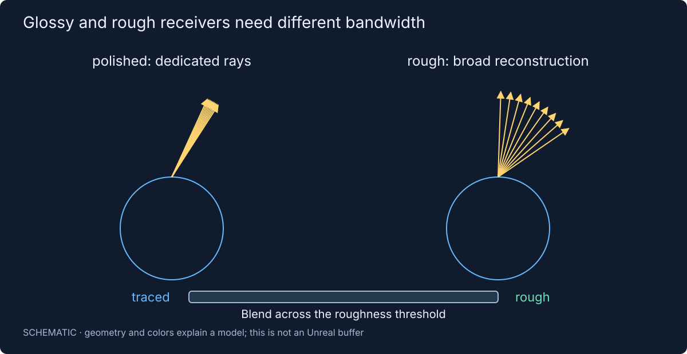
Classify the receivers before allocating ray work
Read roughness and shading-model data from the primary GBuffer. Classify tiles that require dedicated reflection work, allocate ray records, and generate reflected or microfacet-sampled directions with the information needed to interpret their sampling density. Trace the screen representation first when enabled, then compact unresolved rays into the selected world tracing path. Store hit information and radiance in buffers whose indices map back to the originating pixel or downsampled sample.
Begin with an explicit receiver-to-ray mapping. A tile containing a polished sphere and a rough stone wall may need dedicated rays for only some pixels. The classification mask says which receivers participate; the compacted work list says which records will be dispatched. A downsampled trace grid also needs its selected full-resolution sample offset. Without those mappings, a correct traced radiance can be reconstructed onto the wrong side of the sphere. Clear rejected entries to a declared invalid state before sparse writes, and pass the active count to subsequent indirect dispatches.
In the inspected tile classification shader, NeedRayTracedReflections sets the reflection bit after the material's smooth-bias adjustment. The later list builder turns these flags into indirect work lists. A bit identifies a required kind of work; it is not itself a ray, a hit, or a measured lighting value.
Sample the glossy integral, not a blurred final image
Let denote the incident field assigned to the scene-reflection branch after the direct-light ownership split. The target at a receiver is
LaTeX source
R(x,\omega_o)=\int f_{\rm spec}(x;\omega_i\!\to\!\omega_o)
L_{i,R}(x,\omega_i)\,\max(0,n\cdot\omega_i)\,d\sigma(\omega_i).A perfect mirror selects one direction, but a rough reflector has a distribution of contributing directions. Sampling only the ideal mirror direction and blurring its color afterwards is generally not the same integral: the neighboring rays may hit different columns, see different light sources, or miss into the sky. Use the visible-normal microfacet sampler derived earlier to generate plausible half-vectors, reflect the outgoing direction, and convert the half-vector PDF into a directional PDF. Keep geometric-sidedness rejection and the perfect-specular limit explicit.
LaTeX source
\widehat R=\frac1N\sum_{k=1}^{N}
\frac{f_{\rm spec}(x;\omega_k\!\to\!\omega_o)
\widetilde L_{i,R}(x,\omega_k)\max(0,n\cdot\omega_k)}{p_\omega(\omega_k)}.This is the estimator a minimal reference implementation should make correct. The production implementation can move factors between ray generation, trace payloads, resolve, and final BRDF combination; its intermediate RGB textures are not automatically equal to this final R. It can also bias direction selection, limit ray intensity, downsample, and reuse nearby samples to control cost and variance. Each such choice needs a matching weight or an explicit approximation. A narrower sampling distribution without the corresponding PDF correction changes the brightness as well as the noise.
// Minimal reference contract; production buffer packing and weighting differ.
receiver = decode_primary_interaction(pixel)
(wi, pdf) = sample_specular_direction(receiver, random_sample)
if pdf <= 0 or unsupported_geometric_side(receiver, wi): return invalid
ray = {origin, wi, pixel, pdf, roughness, validity}
hit = trace_scene_representations(ray)
Li = evaluate_owned_incident_field(hit, ray)
sample = specular_bsdf(receiver, wi) * Li * positive_cosine / pdf
store(sample, hit.distance, receiver_geometry, validity)Now inspect the production storage boundary. Ray generation writes a direction, a signed cone/inverse-PDF field, and a trace distance. The rough branch uses visible-GGX sampling; its inverse-PDF field is clamped, and its sign also carries the first-person flag. Trace throughput is initialized separately to one. This stage does not write the complete BSDF/PDF product in the reference pseudocode. The ordinary sampler also biases one random coordinate by 1 − GGXSamplingBias (default 0.9), without a separate correction for that truncation. That is a deliberate variance/bias choice, so this path should not be presented as an unchanged unbiased microfacet estimator.
Carry unresolved rays across representations
The screen trace and world trace answer the same ray query with different geometric information. Preserve its origin, direction, remaining interval, owner, and accepted-hit state when compacting unresolved work. An uncertain HZB crossing is not permission to sample an unrelated visible pixel, and leaving the screen is not proof of an environment miss. Only the selected continuation route can establish what the available world representation contains along that direction. The tracing chapter supplies the common intersection contract; reflection payloads additionally retain the information needed for hit shading and glossy reconstruction.
A hit distance serves two jobs. It identifies the secondary intersection for shading, and it helps the reconstruction reason about parallax and footprint. A nearby reflected lamp and the distant sky can have similar colors while requiring very different history correspondences. A miss needs its own validity and environment policy, rather than an arbitrary large number indistinguishable from a distant hit. Preserve those states through resolve even when both routes eventually produce RGB.
There is also a second kind of compaction: the compaction modes select misses for continuation, or select hits whose material record requests another lighting pass. “Compacted” therefore does not universally mean “missed.” The queue's predicate and payload must be part of its contract. Screen tracing also consumes a previous SceneColor sample, so its returned color already carries a temporal and shading approximation in addition to screen-space geometry limitations.
Resolve sparse samples without dragging reflections through time
Resolve these sparse samples into a specular signal using geometry, roughness, hit distance, and temporal information. A glossy reflection can have a very different apparent motion from its primary surface; blindly reusing the surface's diffuse history rule can drag a reflection across the object. Distance and roughness inform reconstruction footprints, while disocclusions and mismatched hits must reduce reuse.
To see why, imagine a smooth mirror fixed to the wall while the camera moves sideways. The wall point has one geometric motion correspondence, but the image of a column inside the mirror shifts according to the reflected view. Reprojecting only the wall can therefore find a previous pixel with the wrong reflected column. At a rough surface the response covers a wider angular neighborhood, so reconstruction can tolerate a broader footprint; at a sharp surface that same reuse erases detail. Geometry validation and roughness-dependent weighting are part of the estimator, not a final cosmetic blur.
Build reconstruction in stages. First display independent current samples with validity and hit distance. Then resolve to the output grid using known receiver mappings and compatibility weights. Add history reprojection and explicit rejection, keeping the current estimate available as a fallback. Finally add the selected variance reduction and neighborhood constraints. For each stage, retain whether the signal is raw incident radiance, a partially weighted estimate, or an already reconstructed specular contribution, and convert previous/current pre-exposure consistently. A second base-color or Fresnel multiplication at composition is not a denoising step.
The production resolve makes that distinction concrete. Its sample weight is the microfacet distribution value divided by the stored ray PDF. It applies weights to accepted center and neighbor samples, then divides accumulated lighting by accumulated weight. This is a normalized, partially weighted radiance reconstruction, rather than the complete per-path BSDF estimator above. It still needs the receiver's environment-BRDF factor at composition. The ordinary opaque composition branch blends rough and traced signals and then multiplies by EnvBRDF; clear coat takes a separate layered branch.
Read conditional compilation before describing history rejection. In this version, the proposed normal/roughness lobe-confidence test is disabled by LOBE_CONFIDENCE=0 in the temporal shader. The hit-history plane-depth test is also disabled. Active logic instead uses validity and depth/distance checks, neighborhood clamping, and a choice between surface and reflected-hit histories based on neighborhood error. Roughness still controls accumulation limits, and the separate spatial filter uses a roughness-dependent radius and normal acceptance cone. These are different operations; an inactive temporal lobe test must not be credited with the spatial filter's rejection.
Separate the ray hit from its lighting
At a secondary hit, Surface Cache mode returns a cheap effective diffuse response. Hit-lighting modes evaluate selected material and lighting terms at the actual hit. They can recover directional specular effects that a direction-independent card cannot represent. However, hit lighting is still a real-time estimator with finite tracing, selected source evaluation, and continued cache reuse for some indirect terms. It is not an unbounded recursive path tracer.
Consider a polished sphere reflecting another metallic object. Correct triangle visibility only identifies the second object. If its lighting comes from a fully rough card response, its reflected appearance can still differ from the path tracer. This is the cleanest reason to distinguish the tracing representation from the secondary-shading representation in both code and comparisons.
The hardware trace's completion logic decides whether a hit still requires hit lighting. Successful scene-color reuse can complete a hit; valid radiance-cache coverage can complete a continuation. Sky is added on a remaining miss when enabled, while the optional skylight-leaking term is a separate artistic approximation that can also affect hits. Intensity clamping controls fireflies. None of those operations establishes a fully recursive reference solution. The captured C sample below uses Surface Cache lighting mode, so it demonstrates that route rather than the material hit-lighting route.
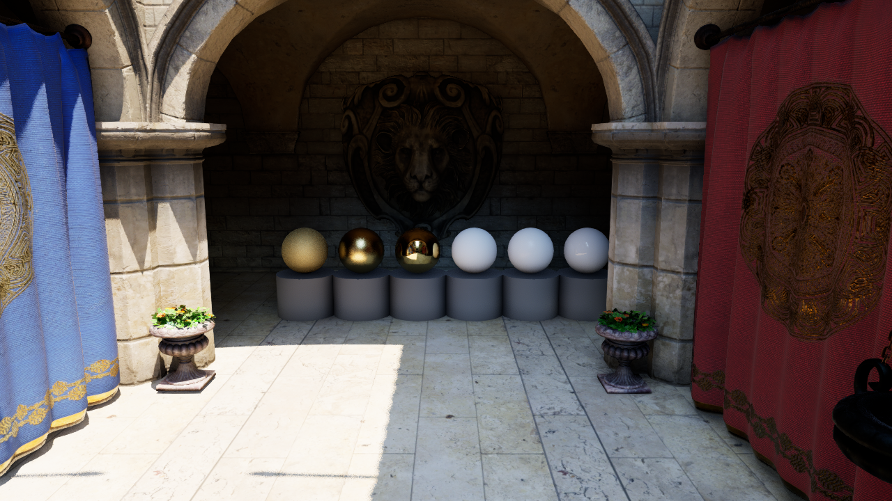

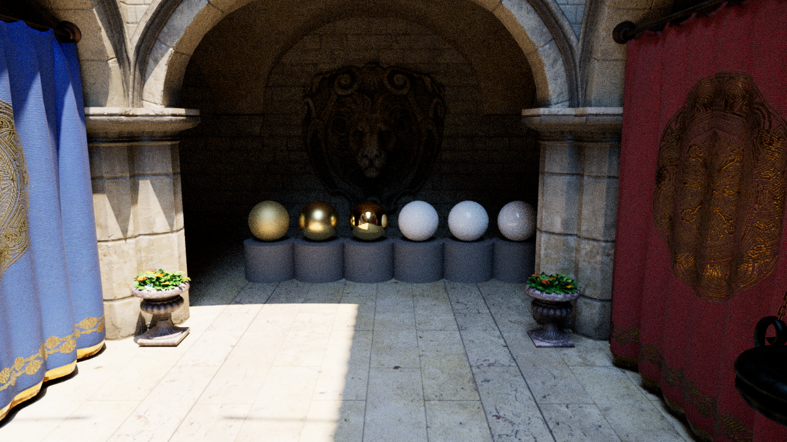

The material-detail camera makes the angular question visible without changing the hero view used for the atrium's other diagnostics. The three metal spheres share linear base color (1, 0.766, 0.336) and metallic value 1; the three gray spheres share base color (0.8, 0.8, 0.8) and metallic value 0. Their different roughness values change the scattering integral. The surrounding stone and cloth provide recognizable structures in that integral.
Inspect the reflected signal independently of the material
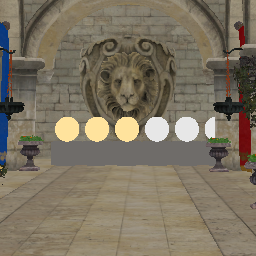

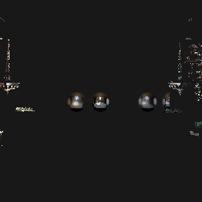

At C, the captured resolved specular signal is (0.0180664,0.0135498,0.0087891), while the later specular-indirect output is (0.0166016,0.0144043,0.0085449), both view-pre-exposed. The resolved hit depth is 273.75 cm. These values and their distinct versions are retained in the reflection record. Differences between stages reflect reconstruction/history processing; they are not another application of base color to a raw environment sample.
Even the history counter needs its own decode contract. This reflection path stores count/32 in a UNORM target. C's raw byte 96 therefore represents (96/255) × 32 ≈ 12.047 effective accumulated frames, rather than 96 frames. Spatial and temporal interpolation can make that value nonintegral. The screen-probe history uses a different packed format, with four bits for fast-update amount and four for a normalized count. Similar resource names do not imply interchangeable encodings.
Blend overlapping specular estimates instead of adding them twice
For sufficiently rough surfaces, the screen-probe path supplies a rough specular approximation. The dedicated traced-reflection path covers lower roughness. Where their ranges overlap, they estimate overlapping illumination and need a blend. In the ordinary opaque Lumen branch,
LaTeX source
\alpha_r=\operatorname{saturate}\left(\frac{r_{\max}-r}{\Delta r}\right),\qquad
R=(1-\alpha_r)R_{\rm rough}+\alpha_rR_{\rm traced}.The inspected default post-process threshold is 0.4 with a default fade length of 0.1; the capture manifest records the actual overrides. At roughness 0.2 the ordinary formula gives fully traced weight; at 0.35 it gives half; at 0.5 it gives none. These are workload and reconstruction decisions. They do not imply that a real material suddenly stops reflecting at roughness 0.4. Clear coat, backface-diffuse materials, SSR, water, and translucent front layers have other branches.
A useful experiment changes the tracing cutoff while keeping the spheres' material roughness unchanged. It changes the representation, not the physical scene. A second experiment changes material roughness with the cutoff fixed. That changes the target integral. Keeping these tests separate prevents a quality-setting effect from being explained as a material law.

The analytic direct-light pass already evaluates the material's specular response to its owned lights. A dedicated scene-reflection result must not add those same owned direct connections again. The final composition follows the source partition, lobe partition, and representation blend together.
Reflection state and mode-specific implementation
The reflection reference documents tile classification, downsample factors, trace hit/throughput/background state, fallback, resolve, and history. The ordinary blend factor is defined in LumenReflectionsCombine.ush. The composition reference explains which signals are already BRDF weighted and which still need the receiver material.
Assemble one frame and account for every contribution
At this point, the renderer contains several RGB images with very different meanings. Some are primary material data. Some are incoming radiance. Some are irradiance. Some already include a material response. Some use cache pre-exposure and others view pre-exposure. Composition is where an apparently small misunderstanding becomes a systematic lighting error.

For the simplified opaque Default Lit configuration, the remaining diffuse response is . Multiply it by the receiver diffuse color. The reflected scene specular signal is chosen or blended according to its route, then receives the corresponding specular response through the composition stage's environment-BRDF factor. Add these to the correctly owned emissive and analytic-direct contributions in the same view-pre-exposed space. The precise production composite also contains occlusion, layered-material, reflection-scaling, and platform branches documented in the reference.
Quantities that must remain distinct through composition
| Signal | Meaning before display | Next operation |
|---|---|---|
| Card direct/indirect lighting | Cache-pre-exposed irradiance at a secondary surface | Multiply by that surface's effective albedo/π and add its emission |
| Card final lighting | Cache-pre-exposed approximate outgoing radiance | Address and validate the hit, convert exposure, return incident radiance to a receiver query |
| Screen-probe diffuse output | View-pre-exposed unit-albedo response E/π | Multiply by the primary receiver's diffuse color once |
| Rough and dedicated scene specular | Overlapping specular estimates with mode-specific response weighting | Blend according to roughness and the selected reflection branch, then apply the receiver environment-BRDF factor where required |
| SceneColor | Combined linear, view-pre-exposed radiance-like RGB | Undo pre-exposure as required, apply exposure/color processing, then display mapping |
Raw GBuffer values are not added to SceneColor. Albedo is not illumination. The Surface Cache's indirect irradiance is not the screen-probe diffuse response. A world-probe radiance texel is not irradiance until integrated. These distinctions explain why the article's buffer views identify units, encoding, exposure, coordinate mapping, producer, and validity alongside their displayed colors.
The dependency graph an implementation must schedule
Build scene representations and capture dirty card material pages. Build or update tracing acceleration structures and distance fields. Update selected card direct lighting and radiosity with their intervening final-lighting combines. Rasterize the primary depth/material state and construct the screen hierarchies and visible-light shadow data. Place screen probes, build guides, mark/update demanded world-cache probes, trace and filter incoming lighting, integrate at receivers, and apply valid history. Trace and reconstruct the selected reflection work. Compose the owned lighting contributions and run the display pipeline.
Some of these tasks can overlap. Unreal's render graph handles resource dependencies, and the renderer separates asynchronous gather work from later composition to overlap eligible work with direct lighting. The order in which C++ records passes is not a measurement of GPU execution time. To profile the system, inspect dispatch dimensions, active lists, resource sizes, queue dependencies, and actual GPU timestamps. Summing nested event durations double-counts time, while comparing an instrumented dump frame with an ordinary frame can measure the capture overhead rather than the algorithm.

A practical implementation ladder
Build a correct subset before adding reuse. Begin with rasterized primary surfaces plus exact direct shadow rays and a reference path tracer. Add a single diffuse surface cache with known coordinates; compare its hit response against the reference at the same point. Add virtual pages only after the nonvirtual lookup is correct. Add sparse screen probes on a flat surface, then adaptive placement and geometry-aware interpolation. Add a world cache for far queries, then depth-aware interpolation. Add temporal history last, after a history-free frame is interpretable. Finally add dedicated glossy tracing and the roughness transition. This order leaves a working comparison at each change.
For each persistent resource, answer the same implementation questions: who allocates it, who initializes it, what quantity it stores, how indices map to geometry or directions, which bits indicate validity, which pass writes the current version, which consumers read it, which event invalidates it, and what happens when its budget is exhausted. Omitting one of these can produce an image that looks correct only while the camera is stationary.
The exact engine details are large because these contracts interact, not because the fundamental transport equation keeps changing. A new optimization should state which contract it replaces and what error it introduces. That is the bridge between the ideal path tracer and the engineering system.
Use Sponza to test the system you just built
A plausible final image is a weak test. Different mistakes can cancel: an overly bright cache can compensate for excessive occlusion, and exposure can conceal a missing indirect contribution. Test the contracts we established individually. Keep the saved camera, lens, materials, light configuration, and display transform fixed, then change one mechanism whose consequence you can predict.
Separate a finite reference from an exact answer
The path-traced images estimate the same scene with a different algorithm. A 1,024-sample image still contains sampling error, and an eight-bounce limit omits longer paths. Increasing samples reduces sampling error within that truncated model; it does not remove the depth limit, repair a different material model, or reconcile different atmosphere settings. Comparing the 256- and 1,024-sample results helps identify residual reference noise. If the larger accumulation contains the smaller accumulation's samples, the two errors are correlated; their difference is not an independent confidence interval.
For a pixel or receiver region, distinguish the quantity being compared. A scene-linear radiance difference measures a lighting discrepancy under the engine's stated RGB calibration. A difference between the published PNG values measures a discrepancy after exposure, tone mapping, and display encoding. Both can be useful, but they answer different questions. A highlight compressed by the tone mapper can have a small PNG difference despite a large linear difference.
Use the same scale for both sides of a comparison. For an error image, name its sign convention, channel combination, and display range. A per-image minimum/maximum stretch destroys the meaning of a brightness comparison. For a diagnostic atlas, a separately declared logarithmic or false-color transform can reveal structure, provided a reader can recover the original value, validity, and address. Neither a bright preview nor successful decompression proves that a resource belongs to the selected camera invocation.
Predict the result of each controlled change
Disable final gathering. Compare directly illuminated stone with the shaded arcade. The primary analytic-light and shadow calculation should remain identifiable, while the diffuse interreflection term changes. Dedicated scene reflections and analytic specular highlights have separate controls. Our control also removes the probe-based rough-specular signal, so its image difference is not pure diffuse energy. This tests contribution ownership in composition; it is not a test that every shiny object should turn black.

The control sets r.Lumen.ScreenProbeGather=0 while retaining the Lumen GI pipeline and dedicated reflections. In this implementation, that branch returns black diffuse textures and a cleared rough-specular texture. Disabling r.Lumen.DiffuseIndirect.Allow instead can select a different lighting path, including a different treatment of sky illumination; its result cannot be interpreted as subtracting one positive term from the baseline. Inspect the source boundary you intend to test before interpreting a console-variable comparison.
Disable screen traces. Newly exposed world-trace and cache behavior should agree where both representations have adequate geometry, material, and lighting support. Differences near a silhouette or an off-screen reflector point to a representation or validity decision. The change does not isolate ray-intersection accuracy by itself: an accepted screen hit and a world hit may also obtain their lighting from different sources. Follow the trace route before assigning the discrepancy to one subsystem.
Change reflection routing while retaining material roughness. Changing the dedicated-reflection threshold tests which estimator supplies the response. Changing roughness at the same time changes the physical scattering problem and confounds that test. Similarly, compare cache shading and hit lighting with the same geometry and camera: material evaluation, directional shading, and cached illumination can differ even when both routes intersect the same triangle. Use the records beside the reflection discussion to identify the selected branch.
Change a light while keeping the camera still. A delayed indirect response can come from surface-cache updates, world-cache updates, probe filtering, or final temporal reconstruction. Record the actual update or render-frame identity, and inspect the intermediate signal that each stage owns. A screenshot request is not itself one simulation update. Nor is a sequence of decreasing image differences proof of convergence to the ideal transport solution: it may be convergence to a biased cached solution.
Actual Unreal final images with the same exposure and display path.
This is evidence of update latency in the combined renderer, not an isolated measurement of the final temporal filter. The Sun also participates in the captured sky environment, and multiple lighting stores can update after the change. The sequence record identifies draws 1, 2, 4, 8, 16, 32, and 64 and the engine frame counter for each. The capture bridge may issue several scene renders within one engine frame, so “64 draws” must not be converted into 64/60 seconds. Separate Lumen Scene direct/indirect diagnostic sequences in that record inspect cached lighting; those labels do not mean the primary direct term or an exact path-length decomposition.
Display-space observation ledger and its limits
| Bridge draw after change | Recorded engine frame | Mean display luma, 0–255 |
|---|---|---|
| 1 | 186 | 61.97 |
| 2 | 187 | 60.79 |
| 4 | 190 | 57.43 |
| 8 | 195 | 53.91 |
| 16 | 204 | 52.07 |
| 32 | 221 | 40.24 |
| 64 | 254 | 31.48 |
The full-image statistic uses 0.2126R + 0.7152G + 0.0722B on the captured PNG channels. It summarizes the visible change; it is neither a radiometric measurement nor a proof of monotonic convergence at every pixel. The underlying sequence retains all images and settings so local behavior can be inspected separately.
Read an error in the order the computation produced it
Start with the camera and primary visibility. Confirm the receiver's depth, normal, material, and active view rectangle. Next inspect direct-light visibility and its contribution. Then follow the indirect query: probe owner, direction or directional cell, accepted trace route, hit or cache lookup, radiance scale, and integration weight. Finally inspect spatial validity and reprojected history. A wrong normal near the start can produce a convincing sequence of internally consistent later buffers; a history failure at the end can hide correct current-frame lighting.
For a numerical walkthrough, record the full address chain. A resource name alone is insufficient when several views or versions share it. Use the scene invocation, producing pass, resource version, mip/slice, stored format, row or element stride, coordinate, and validity state. Decode pre-exposure before comparing quantities from different lighting stores. If a shader-local branch or sample choice was not recorded, label a replay as a declared query and show its inputs. Do not turn a replay that happens to match one output into proof that the dispatched shader selected those same inputs.
Reproduce the examples and continue into the implementation
The small numerical experiments are independent checks of the mathematical contracts. They are original code, use a fixed random seed where sampling is involved, and distinguish analytic values from Monte Carlo estimates. Run python Scripts/Docs/unreal_articles/labs/lumen-course/generate.py --check to verify the published diagrams and arithmetic. Their JSON results identify the expected value and tolerance for each check. They are not GPU benchmarks.
The Sponza scene and its provenance
The model is the Khronos Sponza glTF asset at revision 8f492390, imported into Unreal rather than rendered by a separate viewer. The input contains 103 primitives, 262,267 triangles, 25 materials, and 69 texture images. The download record preserves the source-file hashes. Upstream credits and terms are retained in the model attribution and license record; the model's listed Cryengine Limited License is distinct from the CC-BY-4.0 license on its metadocumentation. The source asset bundle is obtained from the pinned upstream location.
For this scene, each primitive becomes a separate static mesh with a local pivot. Recenter its positions around its source bounding-box center c, preserve the glTF node scale 0.008, import the local geometry, then place the actor at 0.8(c.x, c.z, c.y) centimetres. Unreal's metre-to-centimetre conversion and the node scale give local positions 0.8(p − c), with the same axis swap. Adding the actor translation recovers 0.8p. This keeps the original world geometry while giving each mesh a useful local domain for distance fields and cards. Reusing the original indices, UVs, normals, tangents, and material associations is essential; recreating only the silhouette would change the transport problem. Nanite is disabled for these imported static meshes, so this experiment does not compare Nanite fallback and native ray-tracing geometry.
The saved map is /Game/Labs/SponzaTeaching. The added chart uses six spheres of radius 22 cm, centered at z=60 cm on 40 cm pedestals at x=850 cm. The three roughness values are 0.08, 0.30, and 0.65 for both a dielectric and a gold-colored metal. This provides narrow and broad scattering responses without changing the atrium's architecture.
Exact scene and rendering configuration
| Quantity | Recorded configuration |
|---|---|
| Engine source lineage | 5.8.1 local instrumented build; base 71fe36aac5a8df5ccd66c763ffc902b29b6a9c43 |
| Hero view | 1280 × 720; location (−850, 0, 90) cm; pitch 13°, yaw/roll 0°; horizontal FOV 70° |
| Material-detail view | Location (250, 0, 168) cm; pitch −10.203974°, yaw/roll 0°; horizontal FOV 70.005981° |
| Sun | 80,000 lux, 5500 K; pitch −75°, yaw −35°; source angle 0.5357° |
| Sky | Sky Atmosphere and real-time captured SkyLight; SkyLight intensity scale 16 |
| Exposure | EV100 11, zero exposure bias; histogram minimum and maximum both pinned to 11 |
| Lumen baseline | Hardware tracing on; both screen-trace routes on; Far Field off; Surface Cache atlas size 4096 |
| Path reference | Observed 256/1024 accumulation samples; eight-bounce limit; denoiser off; filter width 3; MIS mode 2 with compensation enabled |
| Path-reference sky route | ReferenceAtmosphere 0; VisibleLights 2; SkylightCaching 0; captured SkyLight environment |
| Display controls | Screen percentage 100; AA method 2; motion blur, bloom, depth of field, and volumetric fog disabled |
The machine-readable configuration records the settings. The separate run records contain readbacks from the actual viewport and observed sample indices. A configuration file states intent; a readback establishes what the capture used.
Inspect the captured frame rather than guessing from a preview
The scene-based temporal controls beside cards and radiosity, screen probes, and the world-cache discussion use thirteen additional native observations. They retain the captured camera transforms, resource versions, signed SH coefficients, allocation identities, and update counters. The temporal archive and decoder instructions preserve all 23,923 files in those selected-resource dumps: 27,141,983,250 native bytes stored in a 1,957,882,466-byte lossless package. Each visual uses the matching native screenshot and scene data; placement is computed from those records rather than drawn by eye.
The screen-probe, card/world-cache, and radiosity decoders retain their complete numerical arrays beside the lightweight figures. The independent screen-SH check compares 298,998 published coefficients with their native payloads, with no difference beyond the declared six-decimal publication rounding. The controls show actual update indices rather than assuming a screenshot request equals a renderer frame. They also keep separate capture sequences separate: one experiment's frame number is not a synchronization point in another run.
Open the Sponza frame explorer to follow the actual resource versions used by this course. Start with the presented scene invocation, graph index 3, then choose the pass named beside the numerical example. A resource selection exposes formats, extent, mip/slice, addressing, producer and consumer links, captured parameters, raw channels, packed fields, and the payload's verification identity. Select only the needed resource chunks; the viewer does not download an entire 95 GB reconstruction.
The data directory and reproduction instructions preserve every available capture file. SHA-256 deduplication and gzip reduce the 95,161,036,158 payload bytes to a complete 657,904,432-byte package including metadata. Independent reconstruction compared all 11,446 payloads and 1,012 native copies against their sources with zero mismatches. This is lossless storage of the available dump, not a claim that the dump observed every internal shader value.
Capture coverage and exact boundaries of the evidence
| Record | Retained evidence |
|---|---|
| Graph | 886 passes across three scene invocations and one Slate graph; final scene passes 593–885 |
| Resource identities | 1,541 native descriptors, normalized to 1,529 resource identities; duplicate descriptor records remain preserved |
| Addressing and readback | 6,675 subresource layouts; 10,404 completion records, all marked Dumped |
| Parameters | 803 native parameter-binding records; 1,128 structure payloads; 521 native uniform records with 35,648 bindings |
| Runtime configuration | 9,262 console variables, captured view transforms, engine/module identities, and saved map hash |
| Explicit gaps | 2,913 coverage records; no missing packaged bytes, but execution observability remains incomplete |
There are no per-pass draw counts. Eighty parameterless passes and three ShaderPrint passes lack native binding blocks. For 1,297 buffer versions, bytes exist without a matching readback-completion record; their identity at the owning pass is therefore unproved. Native uniform traversal occurs while building the graph and does not establish every uniform's value at execution. Nine ray-tracing scene-buffer descriptors have a staging-copy warning and are not treated as usable acceleration structures. Shader-local values and unrecorded random choices require a declared replay or additional instrumentation. These limits remain visible in the coverage ledger.
The numerical examples preserve the distinction between captured values and replayed operations. The source/version/address chain is recorded for every sampled operand. A replay can validate arithmetic or a representation against an output; it cannot retroactively record an unobserved thread-local branch. The original capture analysis is retained alongside a documented correction to two packed-view matrix labels. The receiver reconstruction uses the corrected layout.
The capture and decoder sources preserve the import, authoring, final configuration, controlled captures, and CPU replay logic. Capture scripts record this workstation's bridge and paths. To reproduce on another installation, supply the engine/project paths, import the pinned source asset, apply the saved rendering configuration, verify the active camera and sample-index readbacks, and only then compare results. Initial authoring defaults alone are not the captured final configuration. The package can be decoded without rerunning Unreal.
The implementation reference preserves the controlled-room experiment and its complete available resource package. Its frame explorer exposes pass/resource identities, versions, formats, extents, subresources, stored-format channels, packed bits, producer/consumer relationships, and captured parameters. Its coverage records identify missing semantic information and limits on proving native-resource timing. A raw capture cannot reveal an unrecorded shader-local intermediate; that value must be replayed from recorded inputs or captured by additional instrumentation. A preview image never substitutes for the underlying validity and addressing data.
The course's source-range record freezes the exact linked shader and C++ ranges with line-normalized SHA-256 hashes. These linked files were unchanged relative to the stated engine base commit when inspected. The capture uses a local instrumented build; its own manifest records the executable and module identities. Source lineage, compiled binary identity, and captured runtime settings are separate facts.
The teaching order takes inspiration from Physically Based Rendering, fourth edition and Real-Time Rendering, fourth edition: connect an observable problem to a model, make the model executable, then test the consequence of changing the implementation. The prose, diagrams, and numerical examples here are original. For rigorous light-to-sensor path notation and mixed-measure sampling, continue with Eric Veach's thesis. For the production implementation, use the pinned Unreal source links beside each mechanism; newer engine revisions can change layouts, defaults, and mode selection.